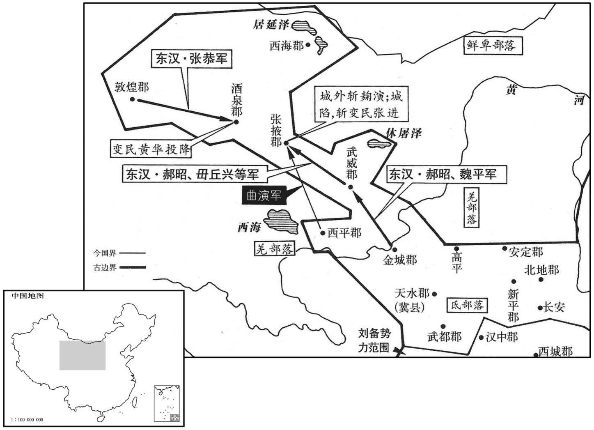
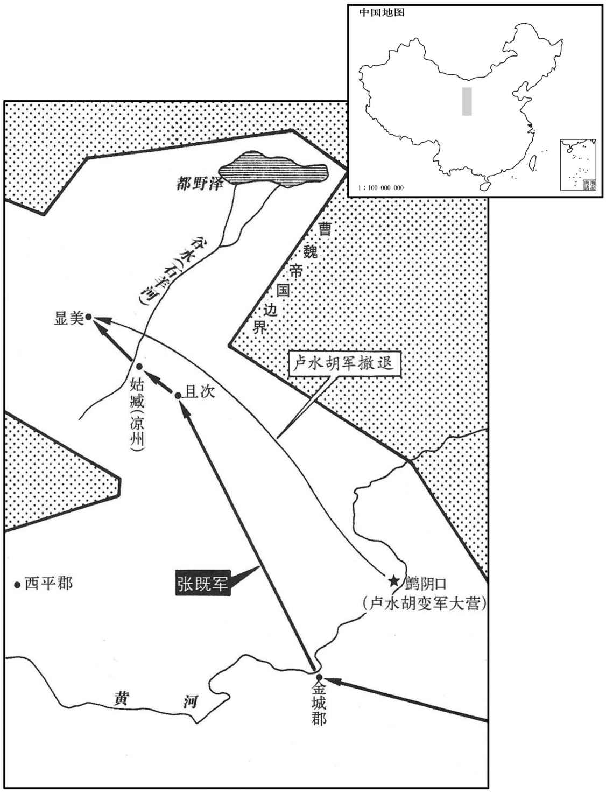
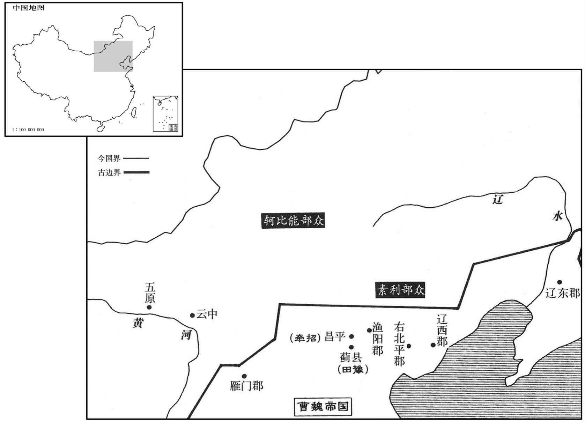
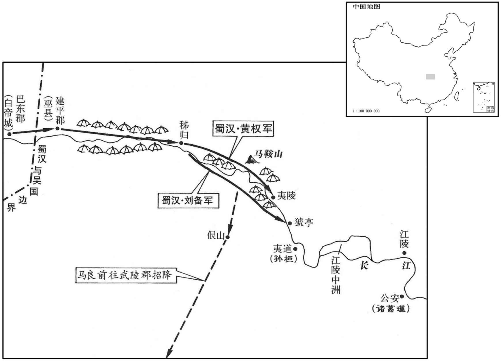
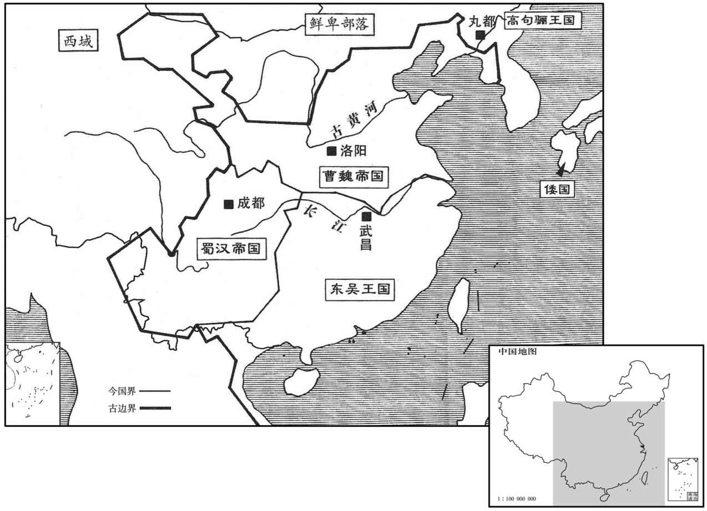
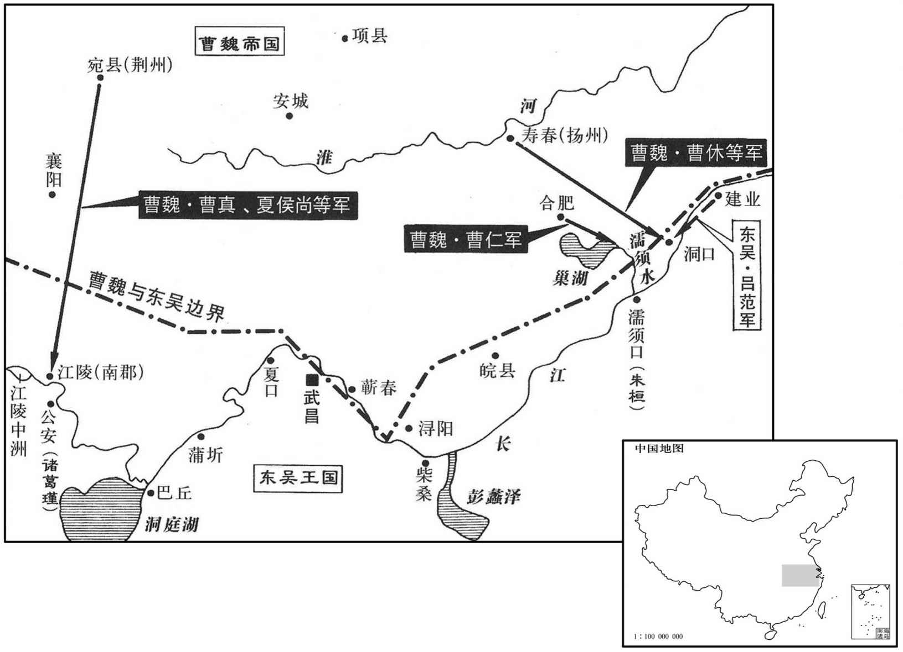

卷次与人物目录 / 卷69
资治通鉴 · 卷第六十九【魏纪一】
公元220年至公元222年 · 原文、白话与胡三省注
本页按胡注本编排保存全卷内容。白话采用本站所据译本，未可靠对应的内容另列说明；事件标题用于定位，并非原书文字。
本卷共98段原文，94段有译文对应，4段缺译或待核对。
卷第六十九【魏纪一】起上章困敦（庚子），尽玄黓摄提格（壬寅），凡三年。
卷首原文与注释
〔操破袁尚，得冀州，遂居于邺。邺，汉之魏郡治所。魏，大名也；遂封为魏公。又谶云：「代汉者当涂高。」当涂高者，魏也。文帝受汉禅，国遂号魏。〕
世祖文皇帝上〔讳丕，字子桓，武王操长子也。谥法：学勤好问曰文。世祖，庙号也。礼，祖有功而宗有德。谥法：景物四方曰世；靖民则法曰皇；明一德者曰皇；明一合道曰皇。德象天地曰帝；按道无为曰帝。〕
公元220年 · 魏世祖文皇帝黄初元年
黄初元年〔（庚子、二二○）魏受汉禅，惟五德之运，以土继火。土色黄，故纪元曰黄初。是年十月受禅，方改元。〕
上传原文的注释括号有异常，字符原样保留；无法可靠划分的段落默认全文显示。
本年事件索引（现代整理）
- 曹操病逝洛阳，司马光评其知人善任而法令严峻
- 曹丕在邺继魏王位，贾逵与陈矫力主及时定嗣
- 二月朔日食
- 贾诩任太尉，华歆、王朗分任相国与御史大夫
- 曹操葬于高陵
- 曹植被贬安乡侯，丁仪兄弟及其家属遭诛
- 鱼豢批评曹操猜忌诸子、诛杀杨修与丁仪
- 司马孚反对任用魏王旧人，主张选拔海内贤才
- 陈群创立九品官人法，以中正评定人才
- 汉帝追尊曹操祖父母
- 苏则平定河西叛乱，收复武威、张掖与酒泉
- 张恭率敦煌守土，助平黄华、张进之乱
- 曹丕率军南巡
- 孙权遣使向魏进贡
- 孟达率部降魏，刘封败逃成都
- 刘备采纳诸葛亮之议，赐死刘封
- 武都氐王杨仆率部归附魏国
- 曹丕在谯县宴飨军民
- 孙盛批评曹丕居父丧设宴、违背礼制
- 贾逵整肃豫州吏治、兴修水利，获曹丕称许
- 李伏、许芝称魏将代汉，群臣劝曹丕受禅
- 汉献帝禅位，曹丕即皇帝位，建立魏朝
- 曹丕尊奉汉献帝为山阳公，追尊曹操为武皇帝
- 辛毗劝曹丕沿用夏历，陈群反对追封太后父母
- 曹丕营建洛阳宫并迁往洛阳
- 苏则劝曹丕以德化招致西域珍宝
- 蒋济直斥曹丕赐夏侯尚“作威作福”为亡国之言
- 辛毗力谏迁徙冀州百姓，曹丕最终只迁其半

本年形势与背景参考图
春，正月，武王至洛阳；庚子，薨。〔魏王操谥曰武。〕王知人善察，难眩以伪。〔眩者，目无常主；难眩以伪，谓人不能乱其明。〕识拔奇才，不拘微贱，随能任使，皆获其用。与敌对陈，〔陈，读曰阵。〕意思安闲，〔思，相吏翻。〕如不欲战然；及至决机乘胜，气势盈溢。勋劳宜赏，不吝千金；无功望施，〔施，式豉翻。〕分豪不与。〔豪，即毫字。〕用法峻急，有犯必戮，或对之流涕，然终无所赦。雅性节俭，不好华丽。〔好，呼到翻。〕故能芟刈群雄，几平海内。〔曰「几」者，以不能并吴、蜀也。芟，所衔翻。几，居布翻。〕
春季，正月，魏武王曹操抵达洛阳；庚子（二十三日），曹操去世。魏王知人善任，善于洞察别人，很难被假像所迷惑；能够发掘和提拔有特殊才能的人，不论地位多么低下，都按照才能加以任用，使他们充分发挥自己的才智。和敌人对阵时，他仪态安详，似乎不愿意打仗；可是一旦制定好策略，向敌人发动攻击，便气势充沛，斗志昂扬。对有功的将士和官吏，赏赐时不吝千金；而对没有功却希望受到赏赐的人，则分文不给。执法时严峻急切，违法的一定加以惩罚，有时对犯罪的人伤心落泪，也不加赦免。生活俭朴，不崇尚富丽奢华。报以能够消灭各个强大的割据势力，几乎统一全国。
是时太子在邺，军中骚动。群僚欲秘不发丧。谏议大夫贾逵以为事不可秘，乃发丧。或言宜易诸城守，悉用谯、沛人。〔曹氏，沛国谯人，小见者以乡人为可信也。守，式又翻；下同。〕魏郡太守广陵徐宣厉声曰：「今者远近一统，人怀效节，何必专任谯、沛，以沮宿卫者之心！」乃止。〔沮，在吕翻。〕青州兵擅击鼓，相引去；〔青州兵，献帝初平三年操破黄巾所降者。〕众人以为宜禁止之，不从者讨之。贾逵曰：「不可。」为作长檄，令所在给其禀食。〔为，于伪翻；下上为、下为同。禀，读曰廪。食，如字。长檄，犹今军行所至帮券也。〕鄢陵侯彰从长安来赴，〔操自汉中还师而东，彰定代而西迎操，因留彰长安。鄢，陆德明谒晚翻，又于建翻；师古音偃。〕问逵：先王玺绶所在。〔玺，斯氏翻。绶，音受。〕逵正色曰：「国有储副，先王玺绶，非君侯所宜问也。」凶问至邺，太子号哭不已。〔号，户刀翻。〕中庶子司马孚谏曰：〔续汉志：太子中庶子，秩六百石，职如侍中。〕「君王晏驾，天下恃殿下为命；当上为宗庙，下为万国，柰何效匹夫孝也！」太子良久乃止，曰：「卿言是也。」时群臣初闻王薨，相聚哭，无复行列。〔行，户刚翻。〕孚厉声于朝曰：〔朝，直遥翻。〕「今君王违世，天下震动，当早拜嗣君，以镇万国，而但哭邪！」乃罢群臣，备禁卫，治丧事。孚，懿之弟也。〔治，直之翻。〕群臣以为太子即位，当须诏命。〔谓须待汉帝诏命也。〕尚书陈矫曰：「王薨于外，天下惶惧。太子宜哀即位，以系远近之望。且又爱子在侧，〔爱子，谓鄢陵侯彰也。〕彼此生变，则社稷危矣。」即具官备礼，一日皆辨。〔辨，与办同，蜀本作「办」。明旦，以王后令，策太子即王位，大赦。汉帝寻遣御史大夫华歆奉策诏，授太子丞相印、绶，魏王玺、绶，领冀州牧。〔华，户化翻。〕于是尊王后曰王太后。
此时，太子曹丕正在邺城，驻洛阳的军队骚动不安。大臣们想先保守秘 密，暂时不公布曹操去世的消息。谏议大夫贾逵认为不应该保密，才把丧事公之于众。有人说，应当把各个城池的守将都换上曹操家乡的谯县人和沛国人。魏郡太守、广陵人徐宣大声说：“如今各地都归于一统，每个人都怀有效忠之心，何必专用谯县人和沛国人，以伤害那些守卫将士的感情！”撤换之事才不再提起。青州籍的原黄巾军士兵擅自击鼓离去，大家认为应加制止，对不服从命令者派兵征讨。贾逵说：“不可以这样做。”于是他写了一篇很长的文告，命令青州兵所到之处的地方官府，要给他们提供粮食。鄢陵侯曹彰从长安赶来，询问贾逵魏王的印玺在何处，贾逵严肃地说：“国家已经确定了先王的继承人，先王的印玺，不是君侯您应当询问的。”噩耗传到邺城，太子曹丕恸哭不已。中庶子司马孚劝谏说：“先王去世，举国上下都仰仗殿下您的号令。您应上为祖宗的基业着想，下为全国的百姓考虑，怎么能效法普通人尽孝的方式呢？”曹丕很久以后才止住哭声，对司马孚说：“你说得对。”当时，大臣们刚刚听到曹操去世的消息，相聚痕哭，一片混乱。司马孚在朝堂上大声说：“如今君王去世，全国震动，当务之急是拜立新君，以镇抚天下，难道你们只会哭泣吗？”于是命令群臣退出朝堂，安排好宫廷警卫，处理丧事。司马孚是司马懿的弟弟。大臣们认太子曹丕即魏王位，应该有汉献帝的诏令。尚书陈矫说：“魏王在外去世，全国惊惶恐惧。太子应节哀即位，以安定全国上下的人心。况且魏王钟爱的儿子曹彰正守在灵柩旁边，他若在此时有不智之举，生出变故，国家就危险了。”当即召集百官，安排礼议，一天之内，全部办理完毕。第二天清晨，以魏王后的命令，拜太子曹丕继承曹操为魏王，下令大赦天下罪犯。不久，汉献帝派御史大夫华歆带着诏书，授予曹丕丞相印绶和魏王玺绶，仍兼任冀州牧，于是曹丕尊奉母后卞氏为王太后。
二月，丁未朔，日有食之。
二月，丁未朔（初一），出现日食。
壬戌，以太中大夫贾诩为太尉，御史大夫华歆为相国，大理王朗为御史大夫。
壬戌（十六日），任命太中大夫贾诩为太尉，御史大夫华歆为相国，大理王朗为御史大夫。
丁卯，葬武王于高陵。〔高陵，在邺城西。操遗令曰：汝等时时登铜雀台，望吾西陵墓田。魏纪载操令曰：规西门豹祠西原上为陵。〕
丁卯（二十一日），安葬魏王曹操的遗体在邺城西面的高陵。
王弟鄢陵侯彰等皆就国。临菑监国谒者灌均，希指奏「临菑侯植醉酒悖慢，劫胁使者。」〔时禁切藩侯，使谒者监其国；监，古衔翻。悖，蒲内翻，又蒲没翻。〕王贬植为安乡侯，诛右刺奸掾沛国丁仪〔王莽置左右刺奸以督奸猾。光武中兴，亦置刺奸将军；然公府掾无其员也。魏、公府始有营军刺奸等员。掾，俞绢翻。〕及弟黄门侍郎廙并其男口，〔并男口诛之，绝其世也。廙，逸职翻，又羊至翻。〕皆植之党也。
魏王曹丕的弟弟鄢陵侯曹彰等人都回到自己的封地。临侯曹植的监国谒者灌均，迎合曹丕的意图，上奏说：“临侯曹植酗酒，言辞轻狂使用慢，动持并胁迫魏王的使者。”曹丕贬曹植为安乡侯，将曹植的党羽，右刺奸掾、沛国人丁仪，黄门侍郎丁兄弟，二人及两家男子全部处死。
鱼豢论曰：谚言：「贫不学俭，卑不学恭。」非人性分殊也，〔分，扶问翻。〕势使然耳。假令太祖防遏植等在于畴昔，此贤之心，何缘有窥望乎！彰之挟恨，尚无所至；至于植者，岂能兴难！〔难，乃旦翻。〕乃令杨修以倚注遇害，丁仪以希意族灭，哀乎！
鱼豢论曰：有句谚语：“贫穷的人，不用学，自然会俭朴；卑下的人，不用学，自然会谦恭。”这并不是说人的性格有差别，而是环境造成的。如果曹操很早就管束曹植等人的举止，有这样贤明的用心，曹植等人怎么会有非分的想法呢？曹彰怀有怨恨，尚且没有到达这一地步；至于曹植，哪里能发动什么变乱！偏偏使杨修因曹植的倚重而遇害，丁仪因逢迎曹植而全家被杀，太令人哀叹了！
初置散骑常侍、侍郎各四人，〔散骑常侍，秦官也。秦置散骑，又置中常侍。散骑，骑从乘舆车后；中常侍得入禁中：皆以为加官。汉东京初省散骑，而中常侍用宦者。至是初置散骑，合之于中常侍为一官，曰散骑常侍，掌规谏，不典事；貂珰插右，骑而散从，后遂为显职。散骑侍郎，自魏至晋与散骑常侍、侍中、黄门侍郎共平尚书奏事，江左乃罢。〕其宦人为官者不得过诸署令；〔谓左．右．中尚方、中黄、左．右藏、左校、甄官、奚官、黄门、掖庭、永巷、御府、钩盾、中藏府、内者等署也。〕为金策，藏之石室。时当选侍中、常侍，王左右旧人讽主者，便欲就用，不调余人。〔调，徒吊翻。〕司马孚曰：「今嗣王新立，当进用海内英贤，如何欲因际会，自相荐举邪！官失其任，得者亦不足贵也。」遂他选。
开始设置散骑常侍、侍郎各四人，宫中的宦官任官不得超过各署令；并将这一规定用金写在策书上，存放在宗庙的石函里。当时，正在选拔侍中、常侍等官员，长期跟随曹丕左右的亲信就暗示主持选官的人，想自己担任，不再从他处选调。司马孚说：“现在新王刚刚登位应该征召和任用全国各地的人才，怎么能够凭借这种机遇，举荐自己身边的人呢？任职不根据才能，做了官也并不尊贵。”因此，才从他处进行选拔。
尚书陈群，以天朝选用不尽人才，〔天朝，谓汉朝也。朝，直遥翻。〕乃立九品官人之法；州、郡皆置中正以定其选，择州郡之贤有识鉴者为之，区别人物，第其高下。〔九品中正自此始。九品，上上、下中、上下、中上、中中、中下、下上、下中、下下也。别，彼列翻。
两版字句有差异，建议核对原文。
尚书陈群认为，汉朝任用的官员，并没有把人才都选举出来，于是设立九口官人的制度：在州和郡都设置中正的职位，以确定应该选用哪些人；中正由各州、郡正贤德、能够鉴别人才的人担任，由他们鉴别人物品行、能力，分出高低不同等级。
夏，五月，戊寅，汉帝追尊王祖太尉曰太王，〔王祖，汉太尉曹嵩也。〕夫人丁氏曰太王后。
夏季，五月，戊寅（初三），汉献帝追封曹丕的祖父太尉曹嵩为魏太王，曹嵩的夫人丁氏为魏太王后。
王以安定太守邹岐为凉州刺史。西平曲演结旁郡作乱以拒岐；张掖张进执太守杜通，酒泉黄华不受太守辛机，皆自称太守以应演；〔诛韩遂者曲演也；盖威行凉部久矣，故进等皆应之。〕武威三种胡复叛。〔种，章勇翻。复，扶又翻。〕武威太守毌丘兴〔毌丘，复姓也。〕告急于金城太守、护羌校尉扶风苏则，则将救之，郡人皆以为贼势方盛，宜须大军。时将军郝昭、魏平先屯金城，受诏不得西渡。〔金城与武威、张掖、酒泉隔河。〕则乃见郡中大吏及昭等谋曰：「今贼虽盛，然皆新合，或有胁从，未必同心；因衅击之，善恶必离，离而归我，我增而彼损矣。既获益众之实，且有倍气之势，率以进讨，破之必矣。若待大军，旷日弥久，善人无归，必合于恶，善恶既合，势难卒离。〔卒，读曰猝。〕虽有诏命，违而合权，专之可也。」昭等从之，乃发兵救武威，降其三种胡，〔降，户江翻；下同。〕与毌丘兴击张进于张掖。曲演闻之，将步骑三千迎则，辞来助军，实欲为变，则诱而斩之，〔诱，音酉。〕出以徇军，其党皆散走。则遂与诸军围张掖，破之，斩进；黄华惧，乞降。〔据裴松之注，华即后为兖州刺史奏王凌者也。事见七十五卷邵陵厉公嘉平三年。〕河西平。
魏王曹丕提升安定太守邹岐为凉州刺史。西平的演勾结附近几郡制造动乱，抗拒邹岐；张掖郡的张进把太守杜通抓了起来，酒泉郡的黄华则拒绝太守辛机赴郡就任，他们都自称太守响应演。武威郡的三个部落的胡人也再度反叛。武威太守丘兴，向金城太守、护羌校尉扶风人苏则告急，苏则要率兵相救，郡中官员认为贼人的势力正盛，救援武威需要大批军队。当时将军郝昭、魏平，原来即驻扎在金城，但奉令不得西渡黄河。苏则召集郡中主要官员以及郝昭等人计议说：“如今贼人气焰虽盛，然而都是刚刚拼凑起来的，其中 有些人被坏人裹胁，未必和贼人一条心；应该利用贼人的内部矛盾，乘机进攻，他们中的善良之辈必然脱离那些邪恶之徒，归附我们，这样，我们增强了力量，贼人的势力也就减弱了。我们既获得增加兵员的实力，又使气势倍增，率兵进讨，一定能够将贼人击溃。如果等待大军到来，需要很长时间，敌军中善良的人没有归宿，必然与邪恶之徒同流合污，善、恶两种人混合在一起，在短期内很难分开开。虽然有命令不得西渡，为权宜之计而暂时违背，自己作决定也是可以的。”郝昭等人同意了，于是调集军队救援武威，三个部落的胡人被降服了。苏则、郝昭等人又和丘兴一起进攻张掖郡的张进。演听说这一消息，率领步、骑兵三千人来迎苏则，声称前来助战，实际上是准备发动突然袭击，苏则借机引诱演会面，将其斩首，并把尸体拖出来展示给他的部属，演的党羽便都散走了。于是，苏则率兵和各路军队包围了张掖，攻克张掖城，杀了张进。黄华恐惧，请求设降。河西各郡全部平定了。
初，敦煌太守马艾卒官，〔敦，徒门翻。卒，子恤翻；下同。〕郡人推功曹张恭行长史事；恭遣其子就诣朝廷请太守。会黄华、张进叛，欲与敦煌并势，执就，劫以白刃；就终不回，私与恭疏曰：「大人率厉敦煌，忠义显然，岂以就在困厄之中而替之哉！今大军垂至，但当促兵以掎之耳。〔掎，举绮翻。从后牵曰掎，又云，偏引曰掎。〕愿不以下流之爱，使就有恨于黄壤也。」〔论语曰：君子恶居下流，天下之恶皆归焉。谓下流当恶居而不当爱也。一曰：流，辈也；牵于父子之爱，而废君臣之义，是常人之流下一等见识，故曰下流之爱。〕恭即引兵攻酒泉，别遣铁骑二百及官属，缘酒泉北塞，东迎太守尹奉。黄华欲救张进，而西顾恭兵，恐击其后，故不得往而降。就卒平安，奉得之郡，诏赐恭爵关内侯。
当初，敦煌太守马艾在任上去世，郡中的人推举功曹张恭暂代长史职务；张恭派儿子张就到朝廷请求派太守赴敦煌郡就任。正赶上黄华、张进叛乱，企图与敦煌郡联合，因此动持了张就，把钢刀架在他脖子上，胁迫他答应结盟，张就誓死不从，秘密送信给张恭说：“您治理敦煌郡，忠义这心，昭示天下，岂能因为我在困境中而改变初衷呢！如今大军很快就要抵达这里，您应率兵从后而牵制黄华。希望父亲不要因为爱儿子，而使儿子饮恨黄泉。”张恭立即率兵攻打酒泉，另派铁甲骑兵二百人及敦煌的属官，沿着酒泉北塞，向东迎接新任郡太守尹奉。黄华企图救援张进，又顾忌西部张恭的部队攻击后路，所以不敢前去救援，只好投降了。张就也因此保全了性命，尹奉得以到郡就任。献帝下诏，赐张恭关内侯的爵位。
六月，庚午，王引军南巡。
六月瘐午（二十六日），魏王曹丕率烟南下巡查。
秋，七月，孙权遣使奉献。
秋季，七月，孙权派使者至汉朝廷奉献贡物。
蜀将军孟达屯上庸，与副军中郎将刘封不协；封侵陵之，达率部曲四千余家来降。达有容止才观，〔观，工玩翻。〕王甚器爱之，引与同辇，以达为散骑常侍、建武将军，封平阳亭侯。合房陵、上庸、西城三郡为新城，〔蜀分三郡见上卷汉献帝建安二十四年。〕以达领新城太守，委以西南之任。行军长史刘晔曰：〔时魏王引军南巡，以晔为长史。〕「达有苟得之心，而恃才好术，〔好，呼到翻。〕必不能感恩怀义。新城与孙、刘接连，〔蜀之汉中，吴之宜都，皆与新城接连。〕若有变态，为国生患。」王不听。〔为孟达叛魏张本。为，于伪翻。〕遣征南将军夏侯尚、右将军徐晃与达共袭刘封。上庸太守申耽叛封来降，封破，走还成都。
蜀将军孟达驻军上庸，与副军郎将刘封不和，爱到刘封欺辱，一气之下，率领部曲四千余家降魏。孟达仪表堂堂，气质不凡，深受曹歪器重和钟爱。曹丕与他同乘一辆车子，任命他为散骑常侍、建武将军，封平阳亭侯。又合并房陵、上庸、西城三郡为新城郡，由孟达兼任太守，负责西南面军政事务。行军长史刘晔对曹丕说：“孟达有侥幸取利之心，而且依恃才智，喜欢权术，肯定不会对您感恩报答。新城郡与孙权、刘备的地盘相接，一旦发生变故恐怕会对国家产生危害。”魏王曹丕不听。派征南将军夏侯尚、右将军徐晃和孟达一起袭击刘封。蜀上庸太守申耽背叛刘封，投降了曹军。刘封被击败，逃回成都。
初，封本罗侯寇氏之子，汉中王初至荆州，以未有继嗣，养之为子。诸葛亮虑封刚猛，易世之后，终难制御，劝汉中王因此际除之；遂赐封死。
当初，刘封本来是罗侯人寇姓人家的儿子，汉中王刘备刚到荆州时，没有儿子，收刘封为养子。诸葛亮认为刘封傲慢固执，性情凶悍，顾虑在刘备去世后，无人能控制他，劝刘备借此机会，将他除掉；刘备便命刘封自杀了。
武都氐王杨仆率种人内附。〔种，章勇翻。〕
武都氐族酋长杨仆率部落依附汉朝廷。
甲午，王次于谯，大飨六军及谯父老于邑东，设伎乐百戏，〔伎，巨绮翻。〕吏民上寿，日夕而罢。
早午（二十日），魏王曹丕驻谯县，在谯县城东大摆宴席，犒劳军队将士，招待谯胰父老，并不歌舞百戏，官员和百姓前来为魏王祝寿，直到日落才散去。
孙盛曰：三年之丧，自天子达于庶人。故虽三季之末，〔谓三代之季也。〕七雄之敝，〔秦、赵、韩、魏、齐、楚、燕为战国七雄。〕犹未有废衰斩于旬朔之间，释麻杖于反哭之日者也。〔麻，绖也。居父丧苴杖。礼：既葬而反哭。檀弓曰：反哭升堂，反诸其所作也。反哭之吊也，哀之至也；反而亡焉，失之矣，于是为甚。衰，仓回翻。〕逮于汉文，变易古制，〔事见十五卷文帝后七年。〕人道之纪，一旦而废，固已道薄于当年，风颓于百代矣。魏王既追汉制，替其大礼，处莫重之哀〔处，昌吕翻。〕而设飨宴之乐，居贻厥之始而堕王化之基，〔夏书曰：有典有则，贻厥子孙。〔堕，读曰隳。〕及至受禅，显纳二女，〔献帝之禅也，册诏魏王曰：汉承尧运，有传圣之义；厘降二女以嫔于魏。是以知王龄之不遐，卜世之期促也。
两版字句有差异，建议核对原文。
孙盛曰：父母去世，子女要守丧三年，上自皇帝，下至百姓，都应如此。所以尺管夏、商、周三代的末期已经衰落，以及战国时期，七雄争霸，全国混乱，也没有人在十天半月之内就脱去孝服，在必须回庙堂哭祭已故父母的日子里扔掉丧杖。到汉文帝时，更改了古代的制度，为人之道的纲纪，一下子就被废除了，所以道德大不如前，风气也比古代几坏得多了。魏王曹丕又仿汉代的制度，接受汉代的礼仪，在人生最应哀痛的时候，却摆宴席，演歌舞，身处创业之始，便毁坏了君王的基础。在接受汉朝皇帝禅让的时候，又公开纳汉献帝的两个女儿为妃，由此可知，曹丕很难长寿，曹氏政权一定是个短命王朝。
王以丞相祭酒贾逵为豫州刺史。〔豫州，统颍川、汝阴、汝南、梁国、沛郡、谯郡、鲁郡、弋阳、安丰等郡。晋地理志曰：魏武分沛郡立谯都，分汝南立汝阴郡，合陈郡于梁国。沈约志曰：弋阳县，本属汝南，魏文帝分立郡，又分庐江为安丰郡。〕是时天下初定，刺史多不能摄郡。〔摄，总录也。〕逵曰：「州本以六条诏书察二千石以下，〔举汉制也。〕故其状皆言严能鹰扬，有督察之才，不言安静宽仁，有恺悌之德也。今长吏慢法，盗贼公行，州知而不纠，天下复何取正乎！」〔复，扶又翻。〕其二千石以下，阿纵不如法者，皆举奏免之。外修军旅，内治民事，〔治，直之翻。〕兴陂田，通运渠，吏民称之。王曰：「逵真刺史矣。」布告天下，当以豫州为法；赐逵爵关内侯。
魏王曹丕任命丞相祭酒贾逵为豫州刺史。当时国家刚刚安定，刺史大都不能统辖所属各郡的事务。贾逵说：“州刺史，原本是以六条诏书监察二千石及其以下官吏，所以在考察报告中，都使用威严雄武、有督察官吏之才等辞句；而不说他们安详、平和、宽厚、仁爱，有谦谦君子之德。如今郡的长官不重视法令，致使盗贼公开抢动、行窃，刺史即使知道也不加追究。这样下去，国家还能走上正轨吗！”对放纵坏人，不按法令办事的，二千石及以下官吏，他都一律上奏朝廷，予以罢免。他还对外整顿武备，对内认真处理民事，开垦水田，疏通转运粮米的水道，受到官员和百姓的称赞。曹丕说：“贾 逵者真正的刺史。”于是向全国发出公告。以豫州为全国各州的榜样，封贾逵为关内侯。
左中郎将李伏、太史丞许芝表言：「魏当代汉，见于图纬，其事众甚。〔据献帝传，李伏引孔子玉板，许芝引春秋汉含孳、玉板谶、佐助期、孝经中黄谶、易运期谶。〕群臣因上表劝王顺天人之望，〔时劝进者，辛毗、刘晔、傅巽、卫臻、桓阶、陈矫、陈群、苏林、董巴；继之者，司马懿、郑浑、羊秘、鲍勋。〕王不许。
左中郎将李伏、太史丞许芝向曹丕上书说：“魏应该取代汉，经过占验河图和纬书，很多事例都证明了这一点。”大臣们因此都上表，劝魏王曹丕遵从上天的意志，顺应官员和百姓的愿望，取代汉朝，登基答帝，曹丕不同意。
冬，十月，乙卯，汉帝告祠高庙，使行御史大夫张音持节奉玺绶诏册，禅位于魏。王三上书辞让，乃为坛于繁阳，〔时南巡至颍川颍阴县，筑坛于曲蠡之繁阳亭。述征记曰：其地在许南七十里。东有台，高七丈，方五十步；南有坛，高二丈，方三十步，即受终之坛也。是年以繁阳为繁昌县。〕辛未，升坛受玺绶，即皇帝位，〔考异曰：陈志云：「丙午，行至曲蠡，汉帝禅位。庚午，升坛即祚。」袁纪亦云：「庚午魏王即位。」按献帝纪，乙卯始发禅册，二十九日登坛受命。又文帝受禅碑至今尚在，亦云辛未受禅。陈志、袁纪误也。范书云：「魏遣使求玺绶，曹皇后不与，如此数辈，后乃呼使者，以玺抵轩下，因涕泣横流曰『天不祚尔！』左右皆莫能仰视。」按此乃前汉元后事，且玺绶无容在曹后之所，此说妄也。〕燎祭天地、岳渎，改元，大赦。
冬季，十月，乙卯（十三日），汉献帝在高祖庙祭祀，报告列祖列宗，派代理御史大夫张音带着符节，捧着皇帝玺绶以及诏书，要让位给魏王曹丕。曹丕三次上书推辞，然后在繁阳筑起高坛，辛未（二十九日），登坛受皇帝玺绶，即皇帝位。燃起大火祭祀天地、山川，更改年号，大赦全国。
十一月，癸酉，奉汉帝为山阳公，〔山阳县，属河内郡。〕行汉正朔，用天子礼乐；封公四子为列侯。追尊太王曰武皇帝，庙号太祖；尊王太后曰皇太后。以汉诸侯王为崇德侯，列侯为关中侯。群臣封爵、增位各有差。改相国为司徒，御史大夫为司空。〔汉献帝建安十三年罢三公官，今复旧。〕山阳公奉二女以嫔于魏。
十一月，癸酉（初一），曹丕尊奉汉献帝刘协为山阳公，仍然使用汉朝的历法，行皇帝的礼仪、音乐；封他的四个儿子为列侯。曹丕追尊自己的祖父魏太王曹嵩为太皇帝；父亲魏武王曹操为武皇帝，庙号为太祖；尊奉母亲魏太后 卞氏为皇太后。改汉封朝的诸侯王为嵩德侯，列侯为关中侯。大臣们封爵、升 迁，各有不同。又把相国改称司徒，御史大夫改称司空。山阳公间协奉献自己的两个女儿给魏文帝曹丕作妃子。
帝欲改正朔，侍中辛毗曰：「魏氏遵舜、禹之统，应天顺民；至于汤、武，以战伐定天下，乃改正朔。孔子曰：『行夏之时，』左氏传曰：『夏数为得天正，』何必期于相反！」帝善而从之。〔自是之后，遂皆以建寅为正。传，直恋翻。〕时群臣并颂魏德，多抑损前朝；〔朝，直遥翻。〕散骑常侍卫臻独明禅授之义，称扬汉美。帝数目臻曰：〔数，所角翻。〕「天下之珍，当与山阳共之。」帝欲追封太后父、母，尚书陈群奏曰：「陛下以圣德应运受命，创业革制，当永为后式。按典籍之文，无妇人分土命爵之制。在礼典、妇因夫爵。〔礼记：妇人无爵，从夫之爵。〕秦违古法，汉氏因之，非先王之令典也。」帝曰：「此议是也，其勿施行。」仍着定制，藏之台阁。〔台阁，尚书中藏故事之处。〕
魏文帝曹丕要重新颁布历法，侍中辛毗说：“魏朝遵循虞舜和夏禹一脉相承的继承关系，顺应天命，合乎民心；只有商汤、周武王，依靠武力征伐统一全国，才会更改历法。孔子说：‘实行夏的历法’，《左传》说：‘夏朝的历法，最符合天地运行的规律，’我们为什么要和它相反呢？”文帝称赞并采纳了辛毗的建议。当时，大臣们都称颂魏朝的功德，贬损汉朝。散骑常侍卫臻却阐述禅让的大义，称赞汉朝的功绩。文帝看了卫臻几次说：“普天下的珍宝，我要和山阳公共同享用。”文帝要追封母亲卞太后的父母，尚书陈群上奏说：“陛下以圣明的德行，顺应天命，创立大业，革除旧制，应该永远成为后代遵从的典范。根据典籍记载，汉有分封妇人土地和爵位的制度。记载礼仪的典籍中，只有妇人附从丈夫的爵位。秦朝违背古代制度，汉朝又继承秦朝的体制，都不符古代君王的法令和经典。”文帝说：“你的看法很对，不要封太后的父母了。”并写下了这一建议，确定为制度，保存在收藏档案的台阁中。
十二月，初营洛阳宫。戊午，帝如洛阳。〔裴松之曰：按诸书记，是时帝居北宫，以建始殿朝群臣，门曰承明。陈思王植诗「谒帝承明庐」是也。至明帝时，始于汉南宫崇德殿处起太极、昭阳诸殿。魏略曰：汉火行也。火忌水，故「洛」去「水」而加「佳」。魏于行次为土。土，水之牡也；水得土而流，土得水而柔。故除「佳」加「水」，变「雒」为「洛」。〕
十二月，开始营建洛阳宫殿。戊午（十七日），魏文帝曹丕到洛阳。
帝谓侍中苏则曰：「前破酒泉、张掖，西域通使敦煌，〔使，疏吏翻。敦，徒门翻。〕献径寸大珠，可复求市益得不﹖」〔复，扶又翻。不，读曰否。〕则对曰：「若陛下化洽中国，德流沙幕，即不求自至。求而得之，不足贵也。」帝嘿然。
文帝对侍中苏则说：“以前攻破酒泉、张掖的时候，西域瘟派使臣至敦煌，贡献直径一寸的大珍珠，可否再让他们来习卖而得？”功则回答说：“如果陛下以教化润泽全国，威德远吸沙漠，不求珍珠，也会有人送来；向人求取才得到，已无珍贵可言。”文帝默然无语。
帝召东中郎将蒋济为散骑常侍。时有诏赐征南将军夏侯尚曰：「卿腹心重将，〔重将，即亮翻。〕特当任使，作威作福，杀人活人。」尚以示济。济至，帝问以所闻见，对曰：「未有他善，但见亡国之语耳。」帝忿然作色而问其故，济具以答，因曰：「夫『作威作福』，书之明诫。〔书洪范曰：臣无有作威作福，臣而有作威作福，其害于而家，凶于而国。〕天子无戏言，古人所慎；惟陛察之！」帝即遣追取前诏。
文帝征召中郎将蒋济为散骑常侍。当时曾有诏书赐给征南将军侯尚说：“你是我非常信任的重要将领，特别委以重任，随你作威作福，有杀人和赦免人特权。”夏侯尚把诏书拿给蒋济看了。蒋济抵达京城，文帝问他有什么见闻，蒋济回答说：“汉有什么可称道之处，只听到了亡国之音 。”文帝听后很生气，脸上立刻变了颜色，问他为什么这么说。”蒋济如实回答说：“‘作威作福’，《尚书》中清楚地将它写作戒律。天子无戏言，古人对这一点非常慎重，还请陛下明察！”文帝立即下令追回给夏侯的诏书。
帝欲徙冀州士卒家十万户实河南。〔时营洛阳，故欲徙冀州士卒家实之。〕时天旱蝗，民饥，群司以为不可，而帝意甚盛。侍中辛毗与朝臣俱求见，〔见，贤遍翻。〕帝知其欲谏，作色以待之，皆莫敢言。毗曰：「陛下欲徙士家，其计安出﹖」帝曰：「卿谓我徙之非邪﹖」毗曰：「诚以为非也。」帝曰：「吾不与卿议也。」毗曰：「陛下不以臣不肖，置之左右，厕之谋议之官，〔侍中，于周为常伯之任，在天子左右，备切问近对，拾遗补阙。〕安能不与臣议邪！臣所言非私也，乃社稷之虑也，安得怒臣！」帝不答，起入内；毗随而引其裾，帝遂奋衣不还，良久乃出，曰：「佐治，卿持我何太急邪！」〔辛毗，字佐治。治，直吏翻。〕毗曰：「今徙，既失民心，又无以食也，故臣不敢不力争。」帝乃徙其半。帝尝出射雉，顾群臣曰：「射雉乐哉！」毗对曰：「于陛下甚乐，于群下甚苦。」帝默然，后遂为之稀出。〔射，而亦翻。乐，音洛。为，于伪翻。〕
文帝要迁徙冀州籍士兵的家属十万户，充实河南郡。当时，天大旱，又 闹蝗灾，百姓饥馑，朝廷各部门都认为不可以，而文帝态度却很坚决。侍中辛毗和朝廷大臣请求晋见，文帝知道他们要劝谏，板起面孔等着，大家见他脸色不好，都不敢说话。辛毗说：“陛下要迁徙士兵家属，理由是什么？”曹丕说：“你认为我的作法不对？”辛毗回答说：“确实不对。”文帝说：“我不 和你讨论。”辛毗说：“陛下不认为我不成才，所以将我安排在陛身边，作为咨询的官员，陛下怎么能不和我讨论呢？我的话并非对我个人有什么好处，而是为国家着想，有什么理由对我发脾气呢？”文帝不答，起身要进内室；辛毗在后面赶上，拉住他的衣襟，文帝猛地拽过衣襟，头也不回地走了进去，过了很久，他又出来，对辛毗说：“辛佐治，你为什么把我挟持得那么急迫！”辛毗说：“迁徙民众，既失人心，又缺少粮食，所以我不得不力争。”这样，文帝只迁徙了五万户。文帝曾出外打野鸡取乐，对官员们说：“射野鸡，实在令人高兴！”辛毗对答说：“这对陛下来说，的确是件高兴事；对我们这些臣子，可是件苦差事。”文帝默然无语，以后就很少出来打猎了。
译本中未与胡注本可靠对应的内容
以下另列供核对版本差异，不并入胡注本正文。
译本所附古文
[2]改元廷康。
译本白话
改年号为延康。
公元221年 · 魏世祖文皇帝黄初二年
二年〔（辛丑、二二一）考异曰：陈志，「正月，乙亥，朝日于东郊。」裴松之以为朝日在二月，按二月辛丑朔，无乙亥。〕
上传原文的注释括号有异常，字符原样保留；无法可靠划分的段落默认全文显示。
本年事件索引（现代整理）
- 孔羡受封宗圣侯，奉祀孔子
- 公孙恭加授车骑将军
- 魏国恢复铸行五铢钱
- 刘备称帝，费诗力谏未成而被贬
- 司马光辨析君、王、霸及历代正统之争
- 孙权迁都鄂县，改名武昌
- 刘备立吴氏为皇后、刘禅为太子
- 曹丕听信郭贵嫔谗言，赐死甄夫人
- 曹丕以邺为宗庙所在，沿用家人礼祭祀曹操
- 曹丕拒绝因日食归罪三公
- 刘备封刘永为鲁王、刘理为梁王
- 赵云劝刘备先伐魏，刘备执意东征孙权
- 张飞部将张达、范强刺杀张飞，携首投吴
- 陈寿评关羽刚愎自矜、张飞暴而无恩，终致败亡
- 诸葛瑾劝刘备先顾天下大局，孙权为其澄清谣言
- 刘备军攻取巫、秭归，孙权命陆逊率军迎战
- 曹丕封诸弟为公，改封曹植
- 魏国修筑陵云台
- 刘晔预言刘备必为关羽兴兵报仇
- 刘晔识破孙权称臣是缓兵之计，劝曹丕乘势攻吴
- 曹丕在曹操陵屋绘于禁降敌受辱，于禁羞愤而死
- 司马光批评曹丕以壁画羞辱降将于禁
- 曹丕封孙权为吴王，刘晔再谏不纳
- 吴国加固武昌城防
- 杨彪辞太尉，曹丕以客礼优待，杨彪八十四岁去世
- 粮价上涨，魏国废止五铢钱
- 张既平定河西卢水胡叛乱
- 张既分化羌胡与叛军，平定西平曲光之乱
- 邢贞赴吴受礼遇，张昭令其下车，徐盛愤言雪耻
- 吴使赵咨出使魏国，以机敏言辞应答曹丕
- 曹丕向吴索取珍宝，孙权尽数奉送
- 孙权立孙登为太子，择诸葛恪等四人为伴读
- 曹丕东巡
- 孙权拒送太子入魏为质，沈珩据理应答
- 张昭以商纣酒池典故劝止孙权醉酒取乐
- 孙权醉中欲杀虞翻，听刘基劝谏后下令酒后不得杀人
- 轲比能统合鲜卑诸部，魏任牵招、田豫镇抚北境

本年形势与背景参考图

本年形势与背景参考图

本年形势与背景参考图
春，正月，以议郎孔羡为宗圣侯，奉孔子祀。〔汉平帝元始元年，封褒成君孔霸曾孙均为褒成侯，奉孔子祀；王莽败，失国。光武建武十三年，复封均子志为褒成侯。志子损，和帝永元四年徙褒亭侯，世世相传，至献帝初国绝。魏封孔子二十一世孙羡为宗圣侯，邑百户。晋封二十三世孙震为奉圣亭侯。后魏封二十七世孙乘为崇圣大夫；孝文太和十九年幸鲁，又改封二十八世孙珍为崇圣侯。北齐改封三十一世孙□为恭圣侯。周武帝平齐，改封邹国公。隋文帝仍旧封邹国公；炀帝改封为绍圣侯。唐太宗贞观十一年，封孔子裔孙伦为褒圣侯。〕
春季，正月，封议郎孔羡为宗圣侯，奉侍祭祀孔子。
三月，加辽东太守公孙恭车骑将军。〔恭，公孙度次子，康之弟也。〕
三月，加封辽东太守公孙恭为车骑将军。
初复五铢钱。〔汉献帝初平元年，董卓坏五铢钱，今复之。〕
开始恢复使用五铢钱。
蜀中传言汉帝已遇害，于是汉中王发丧制服，谥曰孝愍皇帝。群下竞言符瑞，劝汉中王称尊号。前部司马费诗上疏曰：〔时费诗为益州前部司马。费，父沸翻。〕「殿下以曹操父子偪主篡位，故乃羁旅万里，纠合士众，将以讨贼。今大敌未克而先自立，恐人心疑惑。昔高祖与楚约，先破秦者王之。〔王，于况翻。〕及屠咸阳，获子婴，犹怀惟让；〔惟，吐雷翻。〕况今殿下未出门庭，便欲自立邪！愚臣诚不为殿下取也。」〔为，于伪翻。〕王不悦，左迁诗为部永昌从事。〔为益州刺史部从事，部永昌郡。〕夏，四月，丙午，汉中王即皇帝位于武担之南，〔蜀本纪曰：武都有丈夫化为女子，颜色美好，盖山精也。蜀王娶以为妻，不习水土，疾病欲归国。蜀王留之，无几物故。蜀王发卒之武都担土，于成都郭中葬，盖地数亩，高十丈，号曰武担也。裴松之曰：按武担山在成都西北，盖以干位在西北，故就之以即祚。杜佑曰：武担山在蜀郡西。〕大赦，改元章武。以诸葛亮为丞相，许靖为司徒。
蜀地传言汉献帝已经遇害，于是，汉中王刘备下令披麻戴孝，为汉献帝举行丧礼，尊谥汉献帝为孝愍皇帝。群臣纷纷上书，说有很多吉祥之兆，请求刘备即位称帝。前部司马费诗上书说：“殿下因为曹操父子逼迫皇帝，篡夺帝位所以才万里流亡，召集士卒，领兵讨伐曹氏奸贼。如今大敌尚未击败，您却先自称皇帝，恐怕人们会对您的行为产生疑惑。从前，汉高祖与楚人相约，谁先灭掉秦朝，谁就称王。等到攻克咸阳，俘获了秦皇帝子婴，汉高祖对王称号仍然推让。而殿下如今尚未走出门庭，便要自己称皇帝，愚臣我实在认为您不应该这样做。”汉中王对此很不高兴，将费诗降职为州部永昌从事。夏季，四月，丙午（初六），汉中王刘备在成都西北的武担山之南登基称帝，大赦罪犯，改年号为章武。任命诸葛亮为丞相，许靖为司徙。
史家评论 · 原文及其白话
臣光曰：天生烝民，其势不能自治，必相与戴君以治之。〔治，直之翻。〕苟能禁暴除害以保全其生；赏善罚恶使不至于乱，斯可谓之君矣。〔温公之说，正祖周书所谓「抚我则后，虐我则雠」之意。白虎通曰：君者，群也；群下之所归心也。〕是以三代之前，海内诸侯，何啻万国，〔黄帝置左右大监，监于万国。禹会诸侯于涂山执玉帛者万国。〕有民人、社稷者，通谓之君。合万国而君之，立法度，班号令，而天下莫敢违者，乃谓之王。王德既衰，强大之国能帅诸侯以尊天子者，则谓之霸。〔帅，读曰率。〕故自古天下无道，诸侯力争，或旷世无王者，固亦多矣。〔如共工氏在伏羲、神农之间，秦在周、汉之间，皆谓之霸而不王，所谓旷世无王也；又如有穷之于夏，共和之于周，亦旷世而无王也。〕秦焚书坑儒，汉兴，学者始推五德生、胜，以秦为闰位，在木火之间，霸而不王，于是正闰之论兴矣。〔孟康曰：秦推五胜，以周为火，用水胜之。汉儒以庖牺继天而王，为百王首，德始于木。共工氏霸九域，虽有水德，在木火之间，非其序也，故霸而不王。神农氏以火承木，故为炎帝。神农氏没，黄帝氏作，火生土，故为土德。少昊，黄帝之子，土生金，故为金德。少昊之衰，颛顼受之，金生水，故为水德。颛顼之所建，帝喾受之，水生木，故为木德。高辛氏衰，天下归尧，木生火，故为火德。尧嬗舜，火生土，故为土德。舜嬗禹，土生金，故为金德。周伐商，水生木，故为木德。汉伐秦继周，木生火，故为火德。共工及秦不在五德相生之正运，故曰闰位。〕及汉室颠覆，三国鼎跱。晋氏失驭，五胡云扰。宋、魏以降，南、北分治，各有国史，互相排黜，南谓北为索虏，北为〔【章：甲十六行本「为」作「谓」；乙十一行本同；熊校同。】〕南为岛夷。〔索虏者，以北人辫发，谓之索头也。岛夷者，以东南际海，土地卑下，谓之岛中也。〕朱氏代唐，四方幅裂，朱邪入汴，比之穷、新，〔唐庄宗自以为继唐，比朱梁于有穷篡夏、新室篡汉。〕运历年纪，皆弃而不数，此皆私己之偏辞，非大公之通论也。臣愚诚不足以识前代之正闰，窃以为苟不能使九州岛合为一统，皆有天子之名而无其实者也。虽华夏〔【章：甲十六行本「夏」作「夷」；乙十一行本同；张校同。】〕仁暴，大小强弱，或时不同，〔夏，雅翻。〕要皆与古之列国无异，岂得独尊奖一国谓之正统，而其余皆为僭伪哉！若以自上相授受者为正邪，则陈氏何所受﹖〔【章：甲十六行本「受」作「授」；乙十一行本同。】〕拓跋氏何所受﹖若以居中夏者为正邪，〔夏，户雅翻。〕则刘、石、慕容、苻、姚、赫连所得之土，皆五帝、三王之旧都也。若以有道德者为正邪，则蕞尔之国，必有令主，〔蕞，徂外翻，小貌。〕三代之季，岂无僻王！是以正闰之论，自古及今，未有能通其义，确然使人不可移夺者也。臣今所述，止欲叙国家之兴衰，着生民之休戚，使观者自择其善恶得失，以为劝戒，非若春秋立褒贬之法，拨乱世反诸正也。正闰之际，非所敢知，但据其功业之实而言之。周、秦、汉、晋、隋、唐，皆尝混壹九州岛，传祚于后，子孙虽微弱播迁，犹承祖宗之业，有绍复之望，四方与之争衡者，皆其故臣也，故全用天子之制以临之。其余地丑德齐，〔丑，类也；言地之广狭相类也。〕莫能相壹，名号不异，本非君臣者，皆以列国之制处之，〔处，昌吕翻。〕彼此均敌，无所抑扬，庶几不诬事实，近于至公。〔近，其靳翻。〕然天下离析之际，不可无岁、时、月、日以识事之先后。〔识，音志。〕据汉传于魏而晋受之，晋传于宋以至于陈而隋取之，唐传于梁以至于周而大宋承之，故不得不取魏、宋、齐、梁、陈、后梁、后唐、后晋、后汉、后周年号，以纪诸国之事，〔「魏」下当有「晋」字。非尊此而卑彼，有正闰之辨也。昭烈之于汉，虽云中山靖王之后，而族属疏远，不能纪其世数名位，亦犹宋高祖称楚元王后，〔宋高祖，彭城人，自谓汉楚元王交二十一世孙；盖以彭城楚都，故其苗裔家于此地也。〕南唐烈祖称吴王恪后，〔南唐初欲祖吴王恪，或请祖郑王元懿。唐主命考二王苗裔，以吴王孙祎有功，祎有功，祎子岘为丞相，遂祖吴王。〕是非难辨，故不敢以光武及晋元帝为比，使得绍汉氏之遗统也。温公纪年之意，具于此论。
臣司马光曰：上天养育黎民百姓，但出们却不能管理自己，需要推戴出君主来统治。如果这些人能够制止暴行，除去坏人，保障百姓的正常生活；奖赏善良，惩罚邪恶，使社会不发生动乱，才是名符其实的君主。所以夏、商、周三代以前，天下的诸侯国，岂止一万个，能够统治民众，祭祀土地、五谷之神的人，统统被称之为君主。集结万国而加以统治，创立制度，发布号令，天下无人敢违抗的人，被称之为王。王的威德衰落了，强大的国君能够统帅各路诸侯，维护王的威信，便被称作霸。所以自古以来，天下混乱的时候，诸侯们便依靠武力互相争夺，长期没有王的时代，也是很多的。秦焚毁书籍，坑杀儒生，汉朝兴起后，有些学者开始推演金、木、水、火、土五德的相生相克，认为秦朝的帝位是不正统的“闰”位，在“木德”和“火德”之间，能够称作“霸”，却不能称“王”，于是兴起了“正”和“闰”，即正统与非正统的争论 。汉朝政权被颠覆，出现了三国的鼎足而立。在此之后的晋朝又失去了控制全国的能力，五个胡族扰得中原大乱。南朝宋和北魏以后，南方和北方被分而治之，各写自己的国史，互相排斥，彼此攻击，南方人底毁北言人为“索虏”，北方人辱骂南方人为“岛夷”。朱温取代唐朝政权，全国分裂，沙陀人李存勖进入汴京，建立后唐政权，把朱温比作篡夺夏朝政权的有穷氏和取代西汉政权的王莽新室，其历法和纪年，都弃而不用，这都是包藏私心的偏颇心理，不是出于为天下人着想的至公之论。臣下愚昧，不足以辨清以前的那些朝代，哪个是“正”哪个是“闰”，但是我私下以为，如果不能使全国统一，这样的君主，就是只有“天子”之名，而无“天子”之实。虽然因为时代不同，这样的政权有“华”与“夷”、仁厚与暴虐、大与小、强与弱的区别，总的来说，它们都与古代的列国没有什么不同，怎么能够唯独尊崇一个政权为正统，而认为其余的都是窃国的伪政权呢？如果以上下交替的政权为正统，那么南朝的政权继承谁的？拓拢氏的北魏又继承谁的？如果以居于中原华夏这地的政权为正统，则匈奴刘氏、羯族石氏，鲜卑慕容氏、氐族苻氏、羌族姚氏、匈奴赫连氏，这些政权统治的区域，却都是五帝和三王的旧地。如果以有道德的政权为正统，则蕞尔小国也会有贤明的君主，夏、商、周三代的时候，难道就没有淫邪的君王吗？所以说，“正”与“闰”的理论，从古至今，也没有人搞清它的真正涵义，并提出无法反驳的确定不移的论据。我在这 里所陈述的史实，只是说明国家的兴衰，着重讲述与国计民生休戚相关的内容，由读者自己去辨别善恶、得失，以作为警戒和劝勉；而不是《春秋》那样，根据大义对历史人物作出褒贬，以此引导混乱的社会走上正轨。谁是“正”，谁是“闰”，我不敢妄谈，只是根据事业成就如实叙述罢了。周、秦、汉、晋、隋、唐这些朝代，都曾统一全国，将皇位传给自己的子孙，他们的后代虽然衰微，甚至颠沛流离，但还是接替着祖宗的基业，有着继承恢复的愿望，而与他们争夺天下的人，又都是他们以前的臣属，所以仍然以君臣的关系来看待。对其余土地、威德、名号没有什么区别，原本就非君臣关系的政权，都以对待列国的方法来处理，不厚此薄彼，也不抬高一些人，贬低一些人，这才不会歪曲事实，接近公平。然而对国家分崩离析的时代，不能没有年、月、日等时间概念以陈述事件发生的先后顺序。根据汉朝将帝位禅让给曹魏，晋朝又从曹魏接受皇位，以后传于南朝宋，至于陈，又为隋取代，唐传后梁，至于后周，又被大宋承袭下来。所以不得不使用曹魏、南朝宋、齐、梁、陈、后梁、后唐、后晋、后汉、后周的年号，以便于记载各国的史实，并非尊崇谁、鄙视谁，也没有“正”和“闰”之别。蜀汉昭烈帝刘备对汉朝而言，虽然自称是西汉中山靖王的后代，然而属关系太疏远了，已说不清有多少代，处于什么名分和地位，就同南朝宋高祖刘裕自称是西汉楚元王的后代，南唐烈祖李自称是唐朝吴王李恪的后代一样，真假难辨，所以不敢把刘备与东汉光武帝刘秀继承西汉政权，东晋元帝司马睿继承西晋政权相比拟，让他承继汉朝的遗统。
孙权自公安徙都鄂，更名鄂曰武昌。〔更，工衡翻。〕
孙权将吴的都城从公安迁徙至鄂，改鄂名为武昌。
五月，辛巳，汉主立夫人吴氏为皇后。后，作将军懿之妹，故刘璋兄瑁之妻也。〔瑁，莫报翻。〕立子禅为皇太子。娶车骑将军张飞女为皇太子妃。
五月，辛巳（十二日），汉王刘备册立夫人吴氏为皇后。吴皇后是偏将军吴懿的妹妹，已故刘璋的兄长刘瑁的妻子。又立儿子刘禅为皇太子。娶车骑将军张飞的女为皇太子妃。
太祖之入邺也，〔入邺见六十四卷汉建安十年。〕帝为五官中郎将，见袁熙妻中山甄氏美而悦之，〔甄，之人翻。〕太祖为之聘焉，〔为，于伪翻。〕生子叡。及即皇帝位，安平郭贵嫔有宠，〔据陈寿志，郭嫔，安平广宗人。汉广宗县属巨鹿郡。晋志：广宗始属安平。盖魏氏割度也。六宫置贵嫔始此。孔颖达曰：嫔，妇人之美称，可宾敬也。嫔，毗宾翻。〕甄夫人留邺不得见，失意，有怨言，郭贵嫔谮之，帝大怒，六月，丁卯，遣使赐夫人死。〔为明帝立、郭太后以忧崩张本。〕
魏太祖曹操进入邺城时，文帝曹丕为五官中郎将，见到袁熙的妻子、中山人甄氏长得美貌，很喜欢，太祖因此为他娶甄氏为妻，生子曹睿。曹丕称帝后，安平人贵嫔郭氏深受宠爱。甄夫人被留在邺城，不能相见，心情不畅，因而有怨言，郭贵嫔乘机谗毁甄夫人，文帝大怒，六月，丁卯（二十八日），派使臣命甄夫人自尽。
帝以宗庙在邺，〔武王之封魏王，建宗庙于邺。祀太祖于洛阳建始殿，如家人礼。建始殿，帝所起，以建国之始命名。父为士，子为天子，祭以天子；安有用家人礼者哉！
本段缺少可靠对应白话，原文完整保留；未使用生成译文。
戊辰晦，日有食之。有司奏免太尉，〔仍东汉中世之制也。〕诏曰：「灾异之作，以谴元首，而归过股肱，岂禹、汤罪己之义乎！〔左传，臧文仲曰：禹、汤罪己，其兴也勃焉。〕其令百官各虔厥职。后有天地之眚，勿复劾三公。」〔复，扶又翻。〕
戊辰晦（二十九日），出现日食。有关官员奏请罢免太尉，文帝下诏说：“出现天灾和怪异的现象，那是上天在责备君主，如果把过错归于辅佐朝政的大臣，难道符合夏禹、商汤归过于己的本意吗？现命令各级官员尽自己的职责。今后天地出现灾祸，不要再弹劾三公。”
汉主立其子永为鲁王，理为梁王。〔晋书地理志：刘备以郡国封建诸王，或遥采嘉名，不由检其土地所出，孙权亦取中州嘉号封建诸王。自此迄于南北朝，大率类此。〕
汉王刘备立儿子刘永为鲁王，刘理为梁王。
汉主耻关羽之没，将击孙权。翊军将军赵云曰：「国贼，曹操，非孙权也。若告灭魏，则权自服。今操身虽毙，子丕篡盗，当因众心，早图关中，居河、渭上流以讨凶逆，关东义士必裹粮策马以迎王师。不应置魏，先与吴战。兵势一交，不得卒解，非策之上也。」〔赵云之言，可谓知所先后矣。卒，读曰猝。〕群臣谏者甚众，汉主皆不听。广汉处士秦宓〔处，昌吕翻。宓，莫必翻，通作密。不应州郡辟命，故曰处士。〕陈天时必无利，坐下狱幽闭，然后贷出。〔贷，原也，赦也。下，遐稼翻。〕
刘备为关羽的被杀深感耻辱，准备进攻孙权，翊军将军赵云说：“国贼是曹操，而不是孙权。如果无灭掉魏，则孙权自然归服。如今曹操虽然已经死去，他的儿子曹丕窃夺了汉朝的皇位。我们应当顺应民心，尽早夺取关中，占据黄河、渭水上游，以利于征讨凶顽叛逆，函谷关以东的义士，一 定会自带军粮，驱策战马迎接陛下的正义之师。我们不应置曹操而不顾，先和孙权开战。两国战端一开，不可能很快结束，这不是上策。”大臣中劝谏的人很多，汉王都不同意。广汉郡一个不愿为官的士人秦宓，上书陈述天时对蜀军必定不利，因此而被治罪入狱拘押，后来才被赦免。
初，车骑将军张飞，雄壮威猛亚于关羽；羽善待卒伍而骄于士大夫，飞爱礼君子而不恤军人。汉主常戒飞曰：「卿刑杀既过差，〔差，次也。过差，犹今人言过次也。〕又日鞭檛健儿而令在左右，〔檛，陟加翻，棰也。此取祸之道也。」飞犹不悛。〔悛，丑缘翻，改也。〕汉主将伐孙权，飞当率兵万人自阆中会江州。〔阆中县，属巴西郡。此亦由内水下江州也。杜佑曰：汉江州县故城在巴县西。〕临发，其帐下将张达、范强杀飞，以其首顺流奔孙权。汉主闻飞营都督有表，曰：「噫，飞死矣！」〔表当自飞上，而都督越次上之，故知其必死也。凡用兵，必观人事，既失关羽，又丧张飞，兵可以无出矣。〕
当初，车骑将军张飞，英勇善战、雄壮威武仅次于关羽；关羽关心士兵，对士大夫却很傲慢；张飞则对士大夫彬彬有礼，而不关心士兵。汉王经常告诫张飞说：“你刑罚过严，杀人太多，再把那些受过鞭打的将士留在自己的身边，这是招来祸患的做法。”张飞还是不改。汉王刘备将要征讨孙权，张飞应率兵一万人从阆中出发，与大军在江州会合。发兵之前，帐下将领张达、范强杀死了张飞，二人带着张飞的头颅，顺长江而下投降了孙权。汉王听说张飞军营的营都督前来上表，便说：“哎呀，张飞死了！”
陈寿评曰：关羽、张飞皆称万人之敌，为世虎臣。羽报效曹公，〔事见六十三卷献帝建安五年。〕飞义释严颜，〔事见六十七建安十九年。〕并有国士之风。然羽刚而自矜，飞暴而无恩，以短取败，理数之常也。
陈寿评曰：关羽、张飞，都被称作万人之敌，是当世的虎将。关羽报恩曹操，张飞义释严颜，都有国中出类拔萃之士的风度。但是，关羽刚愎自用，自恃才智勇力，张飞暴虐不施恩惠，两人都因为自身的弱点而丧命，这是合乎常理的。
秋，七月，汉主自率诸军击孙权，权遣使求和于汉。南郡太守诸葛瑾遗汉主笺曰：〔遗，于季翻。〕「陛下以关羽之亲，何如先帝﹖〔时蜀人传汉帝已遇害，因称之为先帝。〕荆州大小，孰与海内﹖俱应仇疾，谁当先后﹖若审此数，易于反掌矣。」汉主不听。〔诸葛瑾之言，天下之公也。使汉主因此与吴解仇继好，魏氏其旱食乎！易，以豉翻。〕时或言瑾别遣亲人与汉主相闻者，灌曰：「孤与子瑜，有死生不易之誓，子瑜之不负孤，犹孤之子不负子瑜也。」然谤言流闻于外，陆逊表明瑾必无比，宜有以散其意。权报曰：「子瑜与孤从事积年，恩如骨肉，深相明究。其为人，非道不行，非义不言。玄德昔遣孔明至吴，〔盖谓亮至吴求救时也。〕孤尝语子瑜曰：〔语，牛倨翻。〕『卿与孔明同产，且弟随兄，于义为顺，何以不留孔明﹖孔明若留从卿者，孤当以书解玄德，意自随人耳。』〔意，料度也。权自言料度备意，必当相从。〕子瑜答孤言：『弟亮已失身于人。委质定分，〔质，如字。分，扶问翻。〕义无二心。弟之不留，犹瑾之不往也。』其言足贯神明，今岂当有此乎！前得妄语文疏，即封示子瑜，并手笔与之。孤与子瑜，可谓神交，非外言所间。〔间，古苋翻。〕知卿意至，辄封来表以示子瑜，使知卿意。」〔观孙权君臣之间，推诚相与，谗间不行于其间，所以能保有江东也。
秋季，七月，汉王亲自率领各路军队进攻孙权，孙权派使臣向蜀汉求和。孙权的南郡太守诸葛瑾写信给汉王：“陛下认为您和关羽的感情，是否比您和先帝的感情更亲密？荆州的大小，比全国怎么样？都是仇敌，哪个在先，哪个在后？如果把这想明白，该怎么办就易如反掌。”汉王置之不理。当时有人传言诸葛瑾派遣亲信和汉王互通消息，孙权说：“我和诸葛瑾有生死不变的誓言，他不会背叛我，如同我不会背弃他一样。”然而流言仍然四处传播，陆逊上表说，诸葛瑾肯定不会做那种事，但是应该有所表示，解除他心中的顾虑。孙权回信说：“诸葛瑾和我共事多年，情同骨肉，互相了解很深。他的为人是，不合道德的事不做，不合礼义的话不说。以前刘备派诸葛亮到我吴地，我曾对诸葛瑾说：‘你与诸葛亮是同胞兄弟，弟弟顺从兄长，才符合礼义，为什么不把诸葛亮留下呢？诸葛亮如果留下和你在一起，我会写信给刘备解释，我想他会同意的。’诸葛瑾回答说：‘我弟弟诸葛亮已经失于算计为刘备效劳，双方有了君臣的名分，按照礼义不应再有二心。弟弟不留在这里，如同我不投降刘备，是一个道理。’他的话足以上达神明，现在怎么会做出那种事？以前收到到他有诽谤言论的上书，我立即封起来送给他，并亲笔写上批语。我和诸葛瑾，可以说是推心置腹之交，决非外人的流言所能离间。我已明白你的想法，立即封起你的奏表，送给诸葛瑾，让他了解你的意思。
汉主遣将军吴班、冯习攻破权将李异、刘阿等于巫，〔巫县，汉属南郡；吴初属宜都郡，后孙休分立建平郡，巫属焉。贤曰：巫故城在今夔州巫山县北。杜佑曰：巫，归州巴东县是。又曰：巫山县，楚之巫郡，汉为巫县，故城在今县北，晋置建平郡于此。〕进兵秭归，兵四万余人。武陵蛮夷皆遣使往请兵，权以镇西将军陆逊为大都督、假节，督将军朱然、潘璋、宋谦、韩当、徐盛、鲜于丹、孙桓等五万人拒之。〔孙权始命吕蒙为大督以取关羽，今又复命陆逊为大都督以拒刘备。大都督之号盖昉此。
两版字句有差异，建议核对原文。
刘备派将军吴班、冯习在巫县击溃孙权的将领李异、刘职等人，率兵四万余人继续向秭归进军。武陵的蛮夷各部都派使者请求派兵前往。孙权派镇西将军陆逊为大都督，持符节，统领将军朱然、潘璋、宋谦、韩当、徐盛、鲜于丹、孙桓等五万人，对抗蜀汉的军队。
皇弟鄢陵侯彰、鲁阳侯宇、谯侯林、赞侯衮、襄邑侯峻、弘农侯干、寿春侯彪、历城侯徽、平舆侯茂皆进爵为公；〔鄢，谒晚翻，又于建翻，又音偃。宛，于元翻。鲁阳县，属南阳郡。谯县、酇县，属谯郡。襄邑，属陈留郡。寿春，属淮南郡。历城，属济南郡。平舆，属汝南郡。应劭曰：舆，音预。〕安乡侯植改封甄城侯。〔植以见忌贬侯，今乃改封县侯。甄城属东郡。蜀本作「鄄」，当从之。鄄，音绢。〕
魏文帝的弟弟鄢陵侯曹彰、宛侯曹据、鲁阳侯曹宇、谯侯曹林、赞侯曹衮、襄邑侯曹峻、弘农侯曹、寿春侯曹彪、历城侯曹微、平舆侯曹茂都进爵为公；改封安乡侯曹植为鄄城侯。
筑陵云台。〔据水经注，陵云台在洛阳城中，金市之东。〕
修筑陵云台。
初，帝诏群臣令料刘备当为关羽出报孙权否，〔为，于伪翻；下同。〕众议咸云：「蜀小国耳，名将唯羽；羽死军破，国内忧惧，无缘复出。」〔复，扶又翻。〕侍中刘晔独曰：「蜀虽莅弱，〔莅，即狭字。〕而备之谋欲以威武自强，势必用众以示有余。且关羽与备，义为君臣，恩犹父子；羽死，不能为兴军报敌，于终始之分不足矣。」〔分，扶问翻。〕
当初，魏文帝要大臣们分析刘备是否会为关羽报仇，进攻孙权，大臣们都议论说：“蜀是小国，名将只有一个关羽，他战败身亡，军队被消灭，蜀国正处在担忧和恐惧之中，不会再出兵了。”只有侍中刘晔说：“蜀虽然地界狭窄，国力软弱，但刘备企图依靠威武加强自己，势必要出兵，以表明他的力量强大有余。况且关羽和刘备，名义上是君臣，恩情却如同父子；关羽被杀，不能出兵为他报仇，也不合善始善终的礼义。”
八月，孙权遣使称臣，卑辞奉章，并送于禁等还。〔权破南郡得于禁事，见上卷献帝建安二十四年。〕朝臣皆贺，〔朝，直遥翻。〕刘晔独曰：「权无故求降，〔降，户江翻；下同。〕必内有急。权前袭杀关羽，刘备必大兴师伐之。外有强寇，众心不安，又恐中国往乘其衅，故委地求降，一以却中国之兵，二假中国之援，以强其众而疑敌人耳。〔刘晔之言，曲尽权之情伪。〕天下三分中国十有其八。吴、蜀各保一州，〔约而言之，谓吴保扬，蜀保益也。〕阻山依水，有急相救，此小国之利也；今还自相攻，天亡之也，宜大兴师，径渡江袭之。蜀攻其外，我袭其内，吴之亡不出旬日〔【章：甲十六行本「日」作「月」；乙十一行本同；孔本同；张校同。】〕矣。吴亡则蜀孤，若割吴之半以与蜀，蜀固不能久存，况蜀得其外，我得其内乎！」帝曰：「人称臣降而伐之，疑天下欲来者心，不若且受吴降而袭蜀之后也。」对曰：「蜀远吴近，又闻中国伐之，便还军，不能止也。今备已怒，兴兵击吴，闻我伐吴，知吴必亡，将喜而进与我争割吴地，必不改计抑怒救吴也。」〔抑，按止也。〕帝不听，遂受吴降。〔若魏用刘晔之，言吴其殆矣。〕
八月，孙权派使者向魏称臣，奏章言辞谦卑，还将于禁等人送还。朝廷大臣都表示祝贺，唯独刘晔说：“孙权无故向我投降，一定是内部发生危机。前不久，他偷袭并杀死了关羽，刘备必然会出动大军讨伐他。孙权外部有强大的敌寇，部属心情不安，又恐怕我们乘机进攻，所以献上土地请求投降，一可防止我们进兵，二可借助我们的援助，加强他自己的地位，迷惑他的敌人。如今天下三分，我们占有全国土地听十分之八，吴和蜀各自仅保有一个州的地域，凭恃险要，依托长江大湖，有急难时互相援救，这样才对小国有利。我们应大举进兵，直接渡江袭击孙权。蜀从外部进攻，我们从内部偷袭，不出十天，吴必亡。吴灭亡，蜀的势力也就孤单了，即使将吴的一地割让给蜀，它也不会存在很久，何况蜀只得到吴的边远地区，我们却能得到吴的本土。”文帝说：“有人投降称臣，我们却讨伐他，会使天下愿意归附我们的人产生疑心，不如暂且接受吴的归降，袭击蜀的后路。”刘晔说；“我们距蜀的路途远，但靠近吴，蜀知道我们向它进攻，便退军攻击吴国，听说我军伐吴，知道吴必亡，将会很高兴地迅速向吴进军，同我们争夺、分割吴的疆土，而决不会改变计划，抑制自己的怒火去救援吴。”文帝不听，接受了吴国的归降。
于禁须发皓白，形容憔籑，〔籑，与悴同，秦醉翻。〕见帝，泣涕顿首。帝慰谕以荀林父、孟明视故事，〔晋大夫荀林父与楚战，败于邲，晋景公复用之以取赤狄。秦大夫孟明为晋禽于殽，秦穆公复用之以霸西戎。父，音甫。〕拜安远将军，〔安远将军号，亦前此未有也。〕令北诣邺谒高陵。帝使豫于陵屋画关羽战克、庞德愤怒、禁降伏之状。〔画，古画字通。〕禁见，凓恚发病死。〔恚，于避翻。〕
于禁的头发胡须全都白了，面容憔悴，见到文帝，哭泣着下拜叩首。文帝以古代晋国荀林父、秦国孟明视的故事做比喻安慰他，任命他为安远将军，要他北到邺城去拜谒曹操的陵墓高陵。文帝事先派人在陵园的屋子里画上关羽得胜、庞德发怒、于禁投降的壁画。于禁看到这些画，惭愧悔恨，患病而死。
史家评论 · 原文及其白话
臣光曰：于禁将数万众，败不能死，生降于敌，既而复归；文帝废之可也，杀之可也，乃画陵屋以辱之，斯为不君矣！〔赏庆刑威曰君。〕
臣司马光曰：于禁率兵数万人，兵败而不能战死疆场，为求生而降敌，后来又回到本土，文帝榀以罢黜他，也可以处死他，竟然在陵园里作画羞辱他，这就不像个君王了。
丁巳，遣太常邢贞奉策即拜孙权为吴王，加九锡。〔即，就也。〕刘晔曰：「不可。先帝征伐天下，十兼其八，威震海内；陛下受禅即真，德合天地，声暨四远。权虽有雄才，故汉票骑将军、南昌侯耳，〔票骑、南昌，操挟汉而命之也，事见上卷汉建安二十四年。〕官轻势卑；士民有畏中国心，不可强迫与成所谋也。〔强，其两翻。〕不得已受其降，可进其将军号，封十万户侯，不可即以为王也。夫王位去天子一阶耳，其礼秩服御相乱也。〔汉自景、武以后，裁削藩王，不使与京师同制。自曹操为魏王，加九锡，礼秩服御与天子相乱矣。彼直为侯，江南士民未有君臣之分。〔分，扶问翻。〕我信其伪降，就封殖之，〔封，增土以培之。殖，养之使蕃茂也。〕崇其位号，定其君臣，是为虎傅翼也。〔傅，读曰附。〕权既受王位，却蜀兵之后，外尽礼以事中国，使其国内皆闻，内为无礼以怒陛下；陛下赫然发怒，兴兵讨之，乃徐告其民曰：『我委身事中国，不爱珍货重宝，随时贡献，不敢失臣礼，而无故伐我，必欲残我国家，俘我人民、以为仆妾。』吴民无缘不信其言也。信其言而感怒，上下同心，战加十倍矣。」又不听。〔史言帝再不听刘晔之言，为后伐吴无功张本。〕诸将以吴内附，意皆纵缓，独征南大将军夏侯尚益修攻守之备。山阳曹伟，素有才名，〔此山阳郡也，属兖州。〕闻吴称藩，以白衣与吴王交书求赂，欲以交结京师，帝闻而诛之。
丁巳（十九日），魏文帝派太常邢贞带策命，封孙权为吴王，为表示尊礼，加赐九锡，刘晔说：“不可以封孙权。先皇帝征伐天下，已经拥有全国领土的十分之八，威德震动海内，陛下接受汉朝皇帝的禅让，真正做了皇帝，德行符合天地，声名远播四方。孙权虽有雄才大略，只不过是汉朝的票骑将军、南昌侯而已，官品很低，权势卑下，其属民都有畏惧我中原朝廷之心，很难强迫他们合谋共事。我们不得已接受他的归降，可以晋封他将军的称号，封他为十万户侯，却不能一下子封他为王。王和皇帝相比，只相差一级，所使用的礼乐、服饰、车马的等级也很混乱。孙权仅被封为侯，江南的士人，百姓和他便没有君臣的名分。如果我们相信他的假投降，就大大晋封他，尊崇他的地位，给他加上王的称号，使江南人和他确立群、臣关系，这是为猛虎加上双翼！孙权既然取得子王的地位，迫使蜀军退走之后，外表上遵守礼节，服从朝廷，使人们都知道这件事；实质上对朝廷无理，以激怒陛下；陛下如果发怒动火，出动大军征伐他，他就不慌不忙地对他的百姓说：‘我们委身于中原朝廷，不爱惜珍宝物，按时贡献礼物，不敢违背臣下对皇帝的礼节；但朝廷却无缘无故地征讨我们，一定要消灭我们的国家，俘虏我们的人民去作他们的奴仆和婢妾。’吴的民众便不会不相信他的话。相信这种话而感慨、愤怒，君臣上下一心，战斗力就会增强十倍”文帝仍然不听。曹魏的将领认为吴已经归附，便放松了对吴军的守备，只有征南大将军夏侯尚进一步加强了防务。山阳人曹伟，一向因 才智而闻名，知道吴归附曹魏，便以平民的身份写信给吴王孙权，要求给他一些财物，用来贿赂京城的官员，文帝知道此事后，下令将曹伟处死。
吴又城武昌。〔既城石头，又城武昌，此吴人保江之根本也。〕
吴又在武昌筑城。
初，帝欲以杨彪为太尉，彪辞曰：「尝为汉朝三公，〔朝，直遥翻。〕值世衰乱，不能立尺寸之益，若复为魏臣，〔复，扶又翻。〕于国之选，亦不为荣也。帝乃止。冬，十月，己亥，公卿朝朔旦，并引彪，待以客礼；赐延年杖、〔诗：其柽其椐。传云：椐，樻。孙炎云：樻，肿节，可以作杖。逵玑疏云：节中肿，以扶老；今人以为马鞭及杖，弘农共北山甚有之。陆曰：即今灵寿杖是也。师古曰；木似竹，有枝节，长不过八九尺，围三四寸，自然有合杖制，不烦削治。陈藏器云：生剑南山谷，圆长皮紫，作杖，令人延年益寿。〕冯几，使着布单衣、皮弁以见；〔冯，读曰凭。着，直略翻。见，贤遍翻。〕拜光禄大夫，秩中二千石；〔汉制：光禄大夫比二千石。晋志曰：光禄大夫，汉置，无定员，多以为拜假赙赠之使及监护丧事。魏氏以来，转复优重，不复以为使命之官。其诸公告老者，皆家拜此位；及在朝显职，复用加之。〕朝见，位次三公；〔朝，直遥翻。见，贤遍翻。〕又令门施行马，〔魏、晋之制，三公及位从公，门施行马。程大昌曰：行马者，一木横中，两木瓦穿，以施四角，施之于门，以为约禁也。周礼谓之梐枑，今官府前叉子是也。〕置吏卒，以优崇之。年八十四而卒。〔杨彪有愧于龚胜多矣。〕
开始，文帝要任命杨彪为太尉，杨彪推辞说：“我曾经做地汉朝的三公，遇到社会动荡，对汉朝不能有一尺一寸的帮助；如今再做魏的臣子，对国家选用人材来说，也不光彩。”文帝这才没有任用他。冬季，十月，已亥（初二），大臣早晨上朝，文帝特地要杨彪上前，以宾客的礼节对待他；赐给他延年杖，倚靠身体的小几，允许他穿布制的单衣、戴平常朝会用的皮弁冠上朝；任命他为光禄大夫，品级为中二千石；朝见时，班位仅次于太尉、司徒、司空三公；特许他在门前施用“行马”，设置吏员和士卒，以示优待和尊崇。杨彪在八十四岁时去世。
以谷贵，罢五铢钱。〔复五铢钱无几何而罢。〕
因为粮价太高，文帝下令停止使用“五铢钱。”
凉州卢水胡治元多等反，河西大扰。帝召邹岐还，以京兆尹张既为凉州刺史，遣护军夏侯儒、将军费曜等继其后。〔费，父沸翻。〕胡七千余骑逆拒既于鹯阴口，〔鹯阴县，前汉属安定郡，后汉属武威郡。鹯阴口，鹯阴河口也。〕既扬声军从鹯阴，乃潜由且次出武威。〔二汉志，武有揟次县。孟康曰：揟，音子如翻。次，音咨。即且次也。胡以为神，引还显美。〔显美县，前汉属张掖郡；后汉及魏、晋属武威郡。〕既已据武威，曜乃至，儒等犹未达。既劳赐将士，〔劳，力到翻。〕欲进军击胡，诸将皆曰：「士卒疲倦，虏众气锐，难与争锋。」既曰：「今军无见粮，〔见，贤遍翻。〕当因敌为资。若虏见兵合，退依深山，追之则道险穷饿，兵还则出候寇钞，〔钞，楚交翻。〕如此，兵不得解，所谓一日纵敌，患在数世也。」〔左传，先轸曰：「一日纵敌，数世之患也。」〕遂前军显美。十一月，胡骑数千，因大风欲放火烧营，将士皆恐。既夜藏精卒三千人为伏，使参军成公英督千余骑挑战，〔姓谱：卫成公之后成公氏，余不敢谓之传信。〕敕使阳退；胡果争奔之，因发伏截其后，首尾进击，大破之，斩首获生以万数，河西悉平。
凉州的卢水胡人治元多等造反，河西走廊地区一片混乱。文帝召回邹岐 ，任命京兆尹张既为凉州刺史，派护军夏侯儒、将军费曜等人随后进军。卢水胡骑兵七千余人在阴口迎击张既，张既声称从阴口进兵，却秘密从且次至武威，卢水胡人因此以为他是神人，撤军退守显美县。张既占据了武威后，费曜才赶到，夏侯儒还尚未抵达。张既犒劳、赏赐了将士，准备进攻卢水胡人，部下将领们都说：“我军士兵疲惫，敌人气焰旺盛，很难和他们对抗。”张既说：“如今我军缺少粮食，只有依靠从敌人那里缴获，假如敌人见到我军会合在一起，退回去依凭深山，我军追击，则道路艰险，士兵饥饿；退兵，则敌人又出来抢掠，那样，我们的征战将永无休止。所以说，一日纵敌，遗害数代。”于是，率兵进军显美。十一月，卢水胡骑兵数千人，企图趁大风放火焚烧张既的军营，将领都很惊恐。张既在夜间选精锐士兵三千人设下埋伏，派参军成公英率骑兵一千余人向敌人挑战，命令他有意败退；卢水胡士兵果然奋力追赶，张既令伏兵截路击敌兵的后路，前后夹击，大获全胜，斩首、俘获敌兵近万人，河西走廊全部平定了。
后西平曲光反，杀其郡守。诸将欲击之，既曰：「唯光等造反，郡人未必悉同；若便以军临之，吏民、羌、胡必谓国家不别是非，〔别，彼列翻。〕更使皆相持着，〔着，直略翻。〕此为虎傅翼也。〔为，于伪翻。傅，读曰附。〕光等欲以羌、胡为援，今先使羌、胡钞击，〔钞，楚交翻。〕重其赏募，所虏获者，皆以畀之。外沮其势，〔沮，在吕翻。〕内离其交，必不战而定。」乃移檄告谕诸羌，为光等所诖误者原之；〔诖，古卖翻。〕能斩贼帅送首者当加封赏。〔帅，所类翻。〕于是光部党斩送光首，其余皆安堵如故。
以后，西平人光反叛，杀死西平的郡守。将领们要进攻光，张既说：“叛乱的只是光等人，西平郡的大多数人未必随同他；如果我们派兵前去，西平的官员、百姓、羌人和胡人一定会说朝廷是非不分，便会促使他们依附光，这如同为虎添翼。光等人企图引羌人和胡人作后援，假如我们先派羌人和胡人对光的部队进行攻击和抄掠，给他们以重赏，所掠夺的人和物，都归他们所有。这样，既从外部打击了光的势力，又从内部破坏了他和羌人、胡人之间的关系，不用一兵一卒即可平定叛乱。”于是张既向羌人发出文告说，被光等欺骗的人，都不予追究，能够杀死光等贼帅并送其首级来的，一定会得到封赏。不久，光的部下把他杀死，并送来了首级，其余的人又安居如故。
邢贞至吴，吴人以为宜称上将军，九州岛伯，〔王制九州岛，其一州为天子之县内，八州八伯。〕不当受魏封。吴王曰：「九州岛伯，于古未闻也。昔沛公亦受项羽封为汉王，〔事见九卷汉高帝元年。〕盖时宜耳，复何损邪！」〔复，扶又翻；后同。〕遂受之。吴王出都亭候贞，贞入门，不下车。张昭谓贞曰：「夫礼无敬，法无不行。而君敢自尊大，岂以江南寡弱，无方寸之刃故乎！」贞即遽下车。中郎将琅邪徐盛忿愤，顾谓同列曰：「盛等不能奋身出命，为国家并许、洛，吞巴、蜀，〔为，于伪翻。〕而令吾君与贞盟，不亦辱乎！」因涕泣横流。贞闻之，谓其徒曰：「江东将相如此，非久下人者也。」〔观贞此言，善觇国者也。使还之日，尝以复于魏主否﹖然观贞以张昭之言而下车，则其气已夺矣。
两版字句有差异，建议核对原文。
邢贞抵吴，吴的大臣认为孙权应自称上将军、九州伯，而不应接受曹魏的封号。吴王孙权说：“从古至今，尚未听说过九州伯这一称号。从前沛公刘邦也接受项羽封给的汉王，这是一时的权宜之计，又有什么损害！”于是孙权决定接受曹魏的封号。吴王至都城的亭舍等侯邢贞，邢贞进门不下车。张昭对邢贞说：“没有不恭敬的礼节，也没有不被实行的法令。而客下敢于妄自尊大，是不是以为江南人少力弱，边一寸兵刃都没有！”邢贞当即迅速下车。中郎将琅邪人徐盛愤怒地看着其他将领说：“我们不能拼出性命为国家兼并许都、洛阳，吞并巴、蜀，却使君王与邢贞结盟，难道不感到羞辱吗？”说着便泪流满面。邢贞听到这些话，对随从说：“吴国有这样的将相，不会甘心久居人下的。”
吴主遣中大夫南阳赵咨入谢。帝问曰：「吴主〔【章：甲十六行本「主」作「王」；乙十一行本同；下均同。何等主也﹖」对曰：「聪明、仁智、雄略之主也。」帝问其状，对曰：「纳鲁肃于凡品，是其聪也；拔吕蒙于行陈，是其明也；〔行，户刚翻。陈，读曰阵。〕获于禁而不害，是其仁也；取荆州兵不血刃，是其智也；据三州虎视于天下，〔三州：荆、扬、交也。〕是其雄也；屈身于陛下，是其略也。」帝曰：「吴王颇知学乎﹖」咨曰：「吴王浮江万艘，〔艘，苏刀翻。〕带甲百万，任贤使能志存经略，虽有余闲，博览书传，〔传，直恋翻。〕历史籍，采奇异，张：「奇异」作「微奥」。】〕不效书生寻章摘句而已。」〔帝好文章，故赵咨以此言讥之。「摘」，蜀本作「擿」。〕帝曰：「吴可征否﹖」对曰：「大国有征伐之兵，小国有备御之固。」〔此二语本之管子。〕帝曰：「吴难魏乎﹖」对曰：「带甲百万，江、汉为池，何难之有！」帝曰：「吴如大夫者几人﹖」对曰：「聪明特达者，八九十人；如臣之比，车载斗量，不可胜数。」〔量，音良。胜，音升。〕
本段缺少可靠对应白话，原文完整保留；未使用生成译文。
帝遣使求雀头香、大贝、明珠、象牙、犀角、玳瑁、孔雀、翡翠、鸭、长鸣鸡于吴。〔本草以香附子为雀头香。此物处处有之，非珍也，恐别是一物。贝，质白如玉，紫点为文，皆行列相当。明珠，出合浦，大者径寸。象出交趾，雄者有两长牙，长丈余。犀亦出交趾，惟通天犀最贵，角有白理如线，置米群鸡中，鸡往啄米，见犀辄惊却，南人呼为骇鸡犀。玳瑁状如龟，腹背甲有烘点，其大者如盘盂。诸藩志：樯瑁形如龟、鼋，背甲十三片，黑白班文间错，边栏缺啮如锯。无足而有四鬣，前长后短，以鬣棹水而行。鬣与首斑文如甲。老者甲厚而黑白分明，少者甲薄而花字模糊。世传鞭血成斑者，妄也。孔雀，生罗州，雄者尾金翠色，光耀可爱。埤雅曰：博物志云：孔雀尾多变色，或红或黄，谕如云霞，其色不定。人拍其尾则舞。尾有金翠，五年而后成。始生三年，金翠尚小。初春乃生，三四月后复凋，与花萼俱衰荣。人采其尾以饰扇拂，生取则金翠之色不减。南人取其尾者，握刀蔽于丛竹潜隐之处，伺过，急斩其尾，若不即断，回首一顾，金翠无复光彩。每欲小栖，先择置尾之地。故欲生捕，候雨甚则往擒之，尾沾而重，不能高翔，人虽至，且爱其尾，不复鶱扬也。翡翠，大小一如雀，雄赤曰翡，雌青曰翠，羽可为饰。鸭驯狎，能者难得。长鸣鸡者，其鸣声长也。〕吴群臣曰：「荆、扬二州，贡有常典。〔禹别九州岛，任土作贡，此常典也。〕魏所求珍玩之物，非礼也，宜勿与。」吴王曰：「方有事于西北，〔谓与蜀相距，复须备魏也。〕江表元元，持主为命。彼所求者，于我瓦石耳，孤何惜焉！且彼在谅闇之中，〔闇，音阴。〕而所求若此，宁可与言礼哉！！」皆具以与之。〔史言帝为敌国所窥。〕
文帝派使臣要求吴进贡雀头香、大贝、明珠、象牙、犀角、玳瑁、孔雀、翡翠、斗鸭、长鸣鸡。吴的大臣们说：“荆、扬二州，按照常规向朝廷纳贡魏所要珍玩宝物，不合乎礼制，不应该给他。”吴王说：“我国正在和西北的蜀相对峙，江南的民众百姓，都依赖魏的支持保全自己。它所要求的东西，对我们来说如同石块瓦片，我没有什么可吝惜的。况且曹丕仍在守丧期间，却要求我们奉献这么多珍玩宝物，还怎么能和他谈礼议呢？”于是，按照要求如数献上。
吴王以其子登为太子，妙选师友：以南郡太守诸葛瑾之子恪、绥远将军张昭之子休、〔沈约志，四十号将军，绥远第十四。〕大理吴郡顾雍之子谭、偏将军庐江陈武之子表皆为中庶子，入讲诗书，出从骑射，〔骑，奇寄翻。〕谓之四友。登接待僚属，略用布衣之礼。
吴王立儿子孙登为太子，为他精心选择了师、友：任命南郡太守诸葛瑾的儿子诸葛恪、绥远将军张昭的儿子张休、大理吴郡人顾雍的儿子顾谭、偏将军庐江人陈武的儿子陈表四人都为中庶子，进宫为孙登讲解诗书，出外则教导骑射，这四个人被称为四友。孙登接待属下时，只简略地依照平民之间的交往礼仪。
十二月，帝行东巡。
十二月，魏文帝到东部视察。
帝欲封吴王子登为万户侯，吴王以登年幼，上书辞不受；复遣西曹掾吴兴〔【章：甲十六行本「兴」作「郡」；乙十一行本同；孔本同。】〕沈珩入谢，〔姓谱：沈姓出吴兴，本自周文王第十子聃季，食采于沈，即汝南平舆沈亭是也，子孙以国为氏。及楚庄王之子公子真封于沈鹿，其后有沈尹戍、沈诸梁。珩，音行。〕并献方物。帝问曰：「吴嫌魏东向乎﹖」珩曰：「不嫌。」曰：「何以﹖」曰：「信持旧盟，言归于好，〔好，呼到翻。〕是以不嫌；若魏渝盟，自有豫备。」又问：「闻太子当来，宁然乎﹖」珩曰：「臣在东朝，朝不坐，宴不与，〔吴在江东，故曰东朝。「朝不坐宴不与」，记檀弓记尹商阳之言。朝，直遥翻。〕若此之议，无所闻也。」帝善之。
文帝要封吴王孙权的儿子孙登为万户侯，吴王以儿子年幼为由，上书推辞；接着又派西曹掾吴兴人沈珩入朝道谢，还献上了江南的特产。文帝问沈珩：“吴是否怀疑我们会向东发动进攻？”沈珩回答：“不怀疑。”问：“为什么？”答：“相信凭借我们以前的盟誓，两国言归于好，所以不怀疑；即使魏破坏盟约，我们也早有准备。”又问；“据说吴的太子将要来，这消息是否属实？”沈珩答道：“我在吴国，既不上朝，也不参加宴会，还未曾听到这种议论。”文帝认为他答对得体。
吴王于武昌临钓台〔水经，武昌有樊山，北背大江，江上有钓台。〕饮酒，大醉，使人以水洒群臣〔醉者，以水洒之醒，然后能饮。〕曰：「今日酣饮，惟醉堕台中，乃当止耳！」张昭正色不言，出外，车中坐。王遣人呼昭还人，谓曰：「为共作乐耳，〔乐，音洛；下同。〕公何为怒乎﹖」昭对曰：「昔纣为糟丘酒池，长夜之饮，〔纣以酒为池，糟丘足以望七里，一鼓而牛饮者三千人。悬肉为林，使男女惭逐于其间，为长夜之饮。〕当时亦以为乐，不以为恶也。」王默然凓，遂罢酒。
吴王和臣下在武昌钓台上饮酒，酩酊大醉，令人把水洒在大臣身上，使他们清醒后继续再喝，吴王说：“今日畅饮，不醉倒在钓台上，我们不停杯！”张昭板着面孔、一言不发地出去，坐在车子里。吴王派人将张昭叫回来，对他说：“大家不过是共享欢乐，您为什么发怒？”张昭回答说：“以前商纣王作糟丘和酒池，通宵饮酒，当时也以为很快乐，没想过有什么不好。”吴王深感惭愧，一言不发，停止了酒宴。
吴王与群臣饮，自起行酒，虞翻伏地，阳醉不持；王去，翻起坐。〔翻为是者，所以谏也。〕王大怒，手剑欲击之，〔手剑，手援剑也。记曰：子手弓。手，守又翻。〕侍坐者莫不惶遽。〔坐，徂卧翻。〕惟大司农刘基起抱王，谏曰：「大王以三爵之后，手杀善士，虽翻有罪，天下孰知之！〔古者，臣侍君宴，不过三爵，惧其失节也。〕且大王以能容贤蓄众，故海内望风；今一朝弃之，可乎！」王曰：「曹孟德尚杀孔文举，〔事见六十五卷汉献帝建安十三年。〕孤于虞翻何有哉！」基曰：「孟德轻害士人，天下非之。大王躬行德义，欲与尧、舜比隆，何得自喻于彼乎﹖」翻由是得免。王因敕左右：「自今酒后言杀，皆不得杀。」基，繇之子也。〔刘繇为孙策所袭，走死。〕
一次，吴王和大臣饮酒，亲自起身行酒劝饮，虞翻装醉倒地，吴王过去后，他又坐了起来。吴王大怒，手握宝剑要刺虞翻，在座的臣僚无不大惊失色。只有大司农刘基上前抱住吴五，劝谏说：“大王在酒过三杯之后，要亲手杀死贤能之士，即使虞翻有罪，天下又有谁知道？况且大王因为能够招贤容众，才使四海之内的人仰慕；如今却一朝之间毁掉自己的声誉，可以吗？”吴王说：“曹操尚且杀子孔融，我杀个虞翻又算得了什么！”刘基说：“曹操轻率地杀害士人，因而受到天下人的谴责。大王推行德行礼义，要和尧、舜比高下，怎么能够把自己和曹操相提论呢？”虞翻这才免去了一场灾祸。吴王也因此向手下人命令：“从今后，凡我在酒后下令杀人，都不得执行”。刘基是刘繇的儿子。
初，太祖既克蹋顿，〔事见六十五卷汉献帝建安十二年。蹋，徒腊翻。〕而乌桓浸衰，鲜卑大人步度根、轲比能、素利、弥加、厥机等因阎柔上贡献，求通市，通关市，以其土物与中国互市也。上，时掌翻。〕太祖皆表宠以为王。轲比能本小种鲜卑，〔种，章勇翻。〕以勇健廉平为众所服，由是能威制诸部，最为强盛，〔徒勇健而不廉平，未必能制诸部也。〕自云中、五原以东抵辽水，皆为鲜卑庭。轲比能与素利、弥加割地统御，各有分界。〔分，扶问翻。〕轲比能部落近塞，〔近，其靳翻。〕中国人多」叛归之；素利等在辽西、右北平、渔阳塞外，道远，故不为边患。帝以平虏校尉牵招为护鲜卑校尉，南阳太守田豫为护乌桓校尉，使镇抚之。
当初，魏太祖曹操攻杀了蹋顿，乌桓族因此逐渐衰落了。鲜卑酋长步度根、轲比能、素利、弥加、厥机等人通过阎柔向朝廷纳贡，并请求进行贸易，太祖向汉献帝上表，都封他们为王，以示尊崇。轲比能本属于小种鲜卑部落，因勇敢健壮，廉洁公正，为本族人所信服，由于很有威望，因而控制了各部落，势力也最为强大。从云中、五原又东，一直至辽水，都是鲜卑人居住的地区，轲比能和素利、弥加争区域进行统治，各有自己的边界。轲比能统辖的地区靠近边塞，有很多中原人逃到他的地区；素利等人的辖区则在辽西、右北平和渔阳的边塞之外，距离较远，所以没有对边境造成危害。文帝任命平虏校尉牵招为护鲜卑校尉，南阳太守田豫为护乌桓校尉，派他们镇抚鲜卑和乌桓。
译本中未与胡注本可靠对应的内容
以下另列供核对版本差异，不并入胡注本正文。
译本所附古文
[8]帝以宗庙在邺，祀太祖于洛阳建始殿，如家人礼。
译本白话
魏文帝因为皇家宗庙在邺城，所以在洛阳建始殿祭祀太祖曹操，一如祭祀家人的礼议。
译本所附古文
吴主遣中大夫南阳赵咨入谢。帝问曰：“吴主何待主也？”对曰：“聪明、仁智、雄略之主也。”帝问其状，对曰：“纳鲁肃于凡品，是其聪也；拔吕蒙于行陈，是其明也；获于禁而不害，是其仁也；取荆州兵不血刃，是其智也；据三州虎视于天下，是其雄也；屈身于陛下，是其略也。”帝曰：“吴王颇知学乎？”咨曰：吴王浮江万艘，带甲百万，任贤使能，志存经略，虽有余闲，博览书传，历史籍，采奇异，不效书生寻章摘句而已。”帝曰：“吴可征否？”对曰：“大国有征伐之兵，小国有备御之固。”帝曰：“吴难魏乎？”对曰：“带甲百万，江、汉为池，何难之有！”帝曰：“吴如大夫者几人？”对曰：“聪明特达者，八九十人；如臣之比，车载斗量，不可胜数。”
译本白话
吴王派中大夫南阳人赵咨入朝致谢。文帝问他：“吴王是什么样的君主？”赵咨回答：“是个聪明、仁厚、智慧、有雄才谋略的君主。”文帝问何以见得，赵咨对他说：“从平民百姓中选拔鲁肃，委以重任，可说是聪；从行伍中提升吕蒙，任为统帅，应该说是明；俘获于禁而不加害，是他的仁厚；夺取荆州而兵不血刃，是他的智慧；仅占据荆、扬、交三州之地，却对天下虎视耽耽，是他的雄才；屈尊而向陛下称臣，这是他的谋略。”文帝又问：“吴王很有学问吗？”赵咨说：“吴王有战船万艘，军队百万，任用贤能，志在治理天下，闲暇时则博览经典，披阅史籍，吸收书中的精华奇纱这处，而不仿效愚腐书生的作法，只在书中寻章摘句做文章。”文帝问：“吴可以征服吗？”赵咨回答说：“大国有征讨小国的军队，小国则有充分的防备。”文帝接着问：“吴把魏看成是祸难吗？”赵咨对答说：“吴有大军百万，有长江和汉水护城，还有什么祸难！”文帝问：“吴像你这样的人才有几人？”赵咨回答道：“特别聪明通达的人，有八、九十位；像我这样的人，车载斗量，数不胜数。”
公元222年 · 魏世祖文皇帝黄初三年
三年〔（壬寅、二二二）〕
上传原文的注释括号有异常，字符原样保留；无法可靠划分的段落默认全文显示。
本年事件索引（现代整理）
- 正月朔日食
- 曹丕前往许昌
- 曹丕诏令郡国举士不拘年龄，并须经试用
- 西域诸国遣使入贡，魏复设戊己校尉
- 刘备进军夷道猇亭，陆逊避其锐气伺机破敌
- 马良奉命联络五溪蛮夷，授官赐锦
- 曹丕封皇子及诸弟为王
- 曹丕前往襄邑
- 曹丕封曹植为王，魏诸侯王受严密监视与限制
- 曹丕返回许昌
- 魏分荆州江北诸郡另置郢州
- 刘备连营至夷陵，陆逊判断虚实后上疏请战
- 陆逊火攻破刘备连营，斩杀冯习、张南等将
- 刘备败退白帝城，傅肜、程畿拒降战死
- 陆逊按兵不救孙桓，夷陵战后孙桓始服其部署
- 陆逊整肃诸将号令，破蜀后获孙权嘉许
- 诸葛亮感叹法正若在，或能劝止刘备东征
- 曹丕从刘备连营七百里预判其必败
- 冀州蝗灾，百姓饥荒
- 黄权归降魏国，刘备不追究其家属
- 曹丕下诏限制后族干政与受封
- 栈潜反对曹丕立郭贵嫔为后，曹丕不纳
- 孙权拒送太子入魏，曹丕欲伐吴而不纳刘晔之谏
- 曹丕部署三路兵马进攻吴国
- 曹操遗命薄葬，不用金玉陪葬
- 孙权遣书求和并改元黄武，暗中沿江备战
- 曹丕南征遇风暴失利，吴军击退魏军渡江攻势
- 十一月晦日食
- 吴、蜀互遣使者，恢复邦交
- 刘备致书陆逊欲再东进，陆逊判断其无力再战
- 汉嘉太守黄元起兵反叛
- 孙盛率吴军据守江陵中洲，策应南郡

本年形势与背景参考图

本年形势与背景参考图
春，正月，丙寅朔，日有食之。
[[1]]春季，正月，丙寅朔（初一），出现日食。
庚午，帝行如许昌。〔晋志曰：汉献帝都许，魏受禅，徙都洛阳。许宫室、武库存焉，改为许昌。〕
庚午（初五），魏文帝到许昌巡视。
诏曰：「今之计、孝，〔计、孝，上计吏及孝廉也。〕古之贡士也；若限年然后取士，是吕尚、周晋不显于前世也。〔吕尚，年八十余，文王以为师。周太子晋，少有令名。〕其令郡国所选，勿拘老幼；儒通经术，吏达文法，到皆试用。有司纠故不以实者。」〔故不以实，谓用意为奸斯者。〕
文帝下诏：“现在的上计和孝廉，也就是代向朝廷荐举的人才；如果限定年龄，然后再举荐，年老的吕尚、年幼的周朝王子晋等人就不可能扬名于古代。现命令各郡、国选拔人才，不必拘泥于年龄老幼；儒者能够通晓经典，官吏能够懂得文墨，熟悉法令，都榀以试用。有关的部门要纠举弄虚作假的人。”
二月，鄯善、龟兹、于阗王各遣使奉献。〔鄯，上扇翻。龟兹，音丘慈。阗，徒贤翻，又徒见翻。〕是后西域复通，置戊己校尉。〔汉自安帝以后，未尝不欲通西域，讫不能通。今虽置戊己校尉，亦不能如汉之屯田车师也。复，扶又翻。〕
二月，鄯善、龟兹、于阗王分别派使者入朝贡献物品。从此，中原与西域又恢复了联系，并在西域设置了戊己校尉。
汉主自秭归将进击吴，治中从事黄权谏曰：「吴人悍战，而水军沿流，进易退难。〔捍，下罕翻，下旰翻。易，以豉翻。〕臣请为先驱以当寇，陛下宜为后镇。」汉主不从，以权为镇北将军，使督江北诸军；〔为汉主兵败、权不能自反张本。〕自率诸将，自江南缘山截领，〔领，古岭字通。〕军于夷道猇亭。〔裴松之曰：猇，许交翻。夷道县汉属南郡，吴属宜都郡。〕吴将皆欲迎击之。〔将，即亮翻。〕陆逊曰：「备举军东下，锐气始盛；且乘高守险，难可卒攻。〔卒，读曰猝。〕攻之纵下，犹难尽克，若有不利，损我大势，非小故也。今但且奖厉将士，广施方略，以观其变。若此间是平原旷野，当恐有颠沛交逐之忧；今缘山行军，势不得展，自当罢于木石之间，徐制其敝耳。」〔罢，读曰疲。魏人言陆议见兵势，正由此耳。〕诸将不解，〔解，古买翻，晓也。〕以为逊畏之，各怀愤恨。
汉王刘备从秭归出兵，进攻吴国。治中从事黄权劝谏说：“吴人强悍善战，而我们的水军顺长江而下，前进容易，撤退因难。请陛下派我率军为前锋，向敌人发动攻击，陛下应该在后方坐镇。”汉王没有采纳，却任命黄权为镇北将军，派他统领长江以北的各路蜀军。同时，亲率将士，沿长江南岸翻山越岭向吴进发，驻军在夷道县的亭。吴国将领都请求出兵迎击，陆逊说：“刘备率军沿长江东下，锐气正盛，而且凭据高山，坚守险要，很难向他们发起迅猛的进攻。即使攻击成功，也不能守全将他们击败攻，如果攻击不利，将损伤我们的主力，绝不是小小的失误。目前，我们只有褒奖和激励将士，多方采纳和实施破敌的策略，观察形势变化。如果这一带为平原旷野，我们还要担心有互相追逐的困扰；如今他们沿着山岭布署军队，不但兵力无法展开，反而因困在树木乱石之中，自己的渐渐精疲力竭，我们要有耐心，等待他们自己败坏而加以攻击。”各位将领仍不理解，认为陆逊惧怕刘备大军，对他强烈不满。
汉人自佷山通武陵，〔佷山县，前汉属武陵郡；吴属宜都郡。孟康曰：佷，音桓。唐峡州辰阳县有佷山。佷，音银。杜佑曰：峡州长杨县，汉佷山县。余按：唐志「辰阳」，误也，当作「长阳」。〕使侍中襄阳马良以金锦赐五溪诸蛮夷，授以官爵。〔为马良不得还蜀张本。〕
蜀汉从山与武陵联络，派侍中襄阳人马良给武陵五的各蛮夷部落送去黄金和锦帛，并授予他们的首领官职和爵位。
三月，乙丑，立皇子齐公叡为平原王、皇弟鄢陵公彰等皆进爵为王。甲戍，立皇子霖为河东王。
三月，乙丑（初一），魏文帝立皇子齐公曹睿为平原王，晋封皇弟鄢陵公曹彰等人为王。甲戌（初十），立皇子曹霖为河东王。
甲午，帝行如襄邑。
甲午（三十日），文帝襄邑巡视。
夏，四月，戊申，立鄄城侯植为鄄城王。〔鄄，音绢。〕是时，诸侯王皆寄地空名而无其实；王国各有老兵百余人以为守卫，隔绝千里之外，不听朝聘，为设防辅监国之官以伺察之；〔防辅者，言防其为非而辅之以正也。监国，即监国谒者也。朝，直遥翻。为，于伪翻。〕虽有王侯之号而侪于匹夫，〔侪，士皆翻。〕皆思为布衣而不能得。法既峻切，诸侯王过恶日闻；独北海王衮谨慎好学，〔好，呼到翻。〕未尝有失。文学、防辅相与言曰：〔晋百官志：王国置师友、文学各一人。防辅不书者，魏氏防制藩国过差，晋武帝惩其失而不置也。〕「受诏察王举措，有过当奏，有善亦宜以闻。」遂共表称陈衮。
衮闻之，大惊惧，责让文学曰：「修身自守，常人之行耳，〔行，下孟翻。〕而诸君乃以上闻，是适所以增其负累也。〔累，力瑞翻。〕且如有善，何患不闻，而遽共如是，是非所以为益也。」〔衮之言，汉北海王睦之故智也。〕
夏季，四月，戊申（十四日），立鄄城侯曹植为鄄城王。当时，诸侯王只保有封国的空名而汉有实力；各王国只有百余名老兵作为警卫，与都城隔绝千里，又不允许诸侯王到京城朝见皇帝，朝廷在各诸侯王国设置防辅和监国等官员，以监视诸侯王的行动；他们虽有王侯的名义，而实际上与平民百姓汉有什么两样，都想作平民百姓即又不能够。法令既然严峻急切，诸侯王有过错和恶行的情况便天天都听到。只有北海王曹痛勤奋好学，行为谨慎，未曾有过失。王国的文学和防辅商量说：“我们奉命观察北海王的举止行为，他有过失，我们要上报朝廷；有善行，我们也应该向朝廷汇报。”于是二人联名上表陈述曹衮的优点。曹衮知道后，非常惊恐，责备文学官说：“重视道德修养，约束自己，这是做人的本分，而各位却将这些上报朝廷，恰恰是给我增加负担。如果有善行，不怕朝廷不知道，而诸位急迫上报，是在给我帮倒忙。”
癸亥，帝还许昌。
癸亥（二十九日），文帝回到许昌。
五月，以江南八郡为荆州，江北诸郡为郢州。〔既以孙权为荆州牧，统江南八郡，故以江北诸郡置郢州，吴自立，则郢州废矣。
本段缺少可靠对应白话，原文完整保留；未使用生成译文。
汉人自巫建平连营至夷陵界，〔水经注，巫峡首尾一百六十里。巫县属建平郡，则巫峡正在建平郡界，至夷陵则为宜都郡界。然孙休永安三年始分宜都立建平郡，此时未有建平也，史追书耳。杜佑曰：吴建平，今巴东郡。〕立数十屯，以冯习为大督，张南为前部督，自正月与吴相拒，至六月不决。汉主遣吴班将数千人于平地立营，吴将帅皆欲击之，陆逊曰：「此必有谲，且观之。」〔谲，古穴翻。〕汉主知其计不行，乃引伏兵八千从谷中出，逊曰：「所以不听诸君击班者，揣之必有巧故也。」〔揣，初委翻。〕逊上疏于吴王曰：「夷陵要害，国之关限，〔自三峡下九陵，连山迭嶂，江行其中，回旋湍激。至西陵峡口，始漫为平流。夷陵正当峡口，故以为吴之关限。〕虽为易得，亦复易失。〔易，以豉翻。复，扶又翻；下同。〕失之，非徒损一郡之地，荆州可忧，今日争之，当令必谐。备干天常，不守窟穴而敢自送，臣虽不材，凭奉威灵，以顺讨逆，破坏在近，无可忧者。臣初嫌之水陆俱进，今反舍船就步，处处结营，察其布置，必无他变。伏愿至尊高枕，不以为念也。」〔枕，职任翻。〕
蜀军自巫峡建平扎营，直至夷陵附近，设立数十座营盘，以冯习为总指挥，张南为前军指挥，从正月开始与吴军对峙，到六月仍未决战。汉王命令吴班率数千人在平地扎营，吴军将领都要求出击，陆逊说：“这一定有诡诈，我们暂且观察。”汉王见计划无法实现，只好命令八千伏兵从山谷中出来。陆逊说：“我之所以没有听从诸位进攻吴班的建议，是国为我估计刘备一定有计谋的缘故。”陆逊向吴王上书说：“夷陵是军事要地，它的得失，关系到我们的生死存亡。夷陵虽然易得，也容易再失去。失去夷陵，不仅仅是损失了一个郡，就连荆州也令人担忧。今日争夺夷陵，一定要彻底取得胜利。刘备违背常情，不守护自己的巢穴，即胆敢自己送上门来，臣下虽然不才，凭借大王的威灵，名正言顺地讨伐逆贼，大败敌军就在眼前，没有什么可忧虑的。我当初担心刘备会水陆并进，现在他却舍水路不走，从陆路进发，随处扎营，观察他的军事部署，一定不会有什么变化了。希望至尊的大王高枕而卧，不必把这件事老挂在心上。”
闰月，逊将进攻汉军，诸将并曰：「攻备当在初，今乃令入五六百里，相守经七八月，其诸要害皆已固守，击之必无利矣。」逊曰：「备是猾虏，更尝事多，〔更，工衡翻。〕其军始集，思虑精专，未可干也。今住已久，不得我便，兵疲意沮，计不复生。掎角此寇，〔左传：晋人角之，诸戎掎之。角者，当前与之角；掎者，从后掎其足也。沮，在吕翻。掎，居蚁翻。〕正在今日。」乃先攻一营，不利，诸将皆曰：「空杀兵耳！」逊曰：「吾已晓破之之术。」乃敕各持一把茅，以火攻，拔之；一尔势成，〔言一拔营之顷，而兵之胜势成也。一尔，犹言一如此也。〕通率诸军，同时俱攻，斩张南、冯习及胡王沙摩柯等首，破其四十余营。汉将杜路、刘宁等穷逼请降。〔降，户江翻；下同。〕
闰六月，陆逊要向蜀军发动进攻，部下将领都说：“发动进攻，应在刘备立足未稳的时候，如今蜀军已深入我国五六百里，和我们对峙七八个月，占据了险要，加强了防守，现在进攻不会顺利。”陆逊说：“刘备是个很狡猾的家伙，再加之经验丰富，蜀军刚集结时，他思虑周详，我们无法向他发动攻击。如今蜀军已驻扎很长时间，却仍找不到我军的漏洞，将士疲惫，心情沮丧，再也无计可施。现在正是我们对他前后夹击的好机会。”于是，下令先向蜀军的一个营垒发动攻击，战斗失利，将领们都说：“白白损兵折将！”陆逊说：“我已经有了破敌之策。”命令战士每人拿一束茅草，用火攻击，得胜；这样一来，又乘势领各路军队全面出击，斩杀蜀军营垒四十余座。蜀将杜路、刘宁走投无路，只得向吴军请求投降。
汉主升马鞍山，〔今峡州九陵县有马鞍山。〕陈兵自绕，逊督促诸军，四面蹙之，土崩瓦解，死者万数。汉主夜遁，驿人自担烧铙铠断后，仅得入白帝城，〔汉主初连兵入夷陵界，沿路置驿，以达于白帝。及兵败，诸军溃散，惟驿人自担所弃铙铠，烧之于隘以断后，仅得脱也。据水经注：烧铠断道处，地名石门，在秭归县西。杜佑曰：归州巴东县有石门山，刘备断道处。铙，尼交翻，如铃，无舌而有秉。周礼，以金铙止鼓。军中所用也。断，丁管翻。〕其舟船、器械，水、步军资，一时略尽，尸骸塞江而下。〔塞，悉则翻。〕汉主大凓恚曰：「吾乃为陆逊所折辱，岂非天耶！」〔依险行兵，敌扼其冲，情见势屈；敌乘其懈，至于失师，此非天也。〕将军义阳傅肜为后殿，〔魏文帝分南阳郡立义阳郡，又立义阳县属焉。此在肜入蜀之后，史追书也。肜，余中翻。殿，丁练翻。〕兵众尽死，肜气益烈。吴人谕之使降，肜骂曰：「吴狗，安有汉将军而降者！」遂死之。从事祭酒程畿泝江而退，〔从事祭酒，诸从事之长也。〕众曰：「后追将至，宜解舫轻行。」〔舫，甫妄翻。方舟曰舫；又，并两舟曰舫。〕畿曰：「吾在军，未习为敌之走也。」亦死之。〔言擐甲执兵以临敌，固欲就死，未尝习走也。〕
汉王登上马鞍山，环绕自己布置军队，陆逊督促各军四面围攻，紧缩包围圈，蜀军土崩瓦解，战死一万余人。汉王连夜逃走，驿站员亲自挑着兵器铠甲在险要路口焚烧，以阴挡吴军的追击，汉王才得以逃入白帝城。蜀军的船只、器械，水、陆军的军用物资，一下子全被夺取；尸体塞满长江江面，顺流而下。汉王既惭愧又失望地说：“我被陆逊羞辱，这是天意啊！”将军义阳人傅肜掩护大军退却，部下全部战死，他却愈战愈勇，吴军劝他投降，他大骂说：“吴国的狗西，哪有汉将军会投降的！”终于血战而死。从事祭酒程畿逆长江乘船退却部下说：“后面追兵紧迫，应把两船连结的方舟拆开，轻舟撤退。”程畿说：“我从军以来，还未学过如何逃跑。”也战死了。
初，吴安东中郎将孙桓别击汉前锋于夷道，〔夷道县，汉属南郡，吴属宜都郡。〕为汉所围，求救于陆逊，逊曰：「未可。」诸将曰：「孙安东，公族，见围已困，柰何不救﹖」逊曰：「安东得士众心，城牢粮足，无可忧也。待吾计展，欲不救安东，安东自解。」及方略大施，汉困奔溃。桓后见逊曰：「前实怨不见救；定至今日，〔言至今日而事始定。〕乃知调度自有方耳！」〔调，徒吊翻。〕
当初，吴安东中郎将孙桓，另外率军在夷道抗击蜀军前锋，被蜀军包围，向陆逊求援，陆逊说：“不可以。”将领们说：“孙将军是大王的同族，如今被围受困，为什么不派兵救援？”陆逊答道：“孙将军深得军心，城池坚固，军粮充足，不必担忧。我的计划成功之后，我们不救孙将军，对孙将军的包围也会自行解除。”等到陆逊的计划大获成功，包围孙桓的蜀军果然争相逃走。后来，孙桓见到陆逊说：“最初确实埋怨你不来救援，现在事情已经明朗，才知道你调度有方。”
初，逊为大都督，诸将或讨逆时旧将，〔讨逆，谓孙策也。〕或公室贵戚，各自矜持，〔【章：甲十六行本「持」作「恃」；乙十一行本同；张校同。】〕不相听从。逊按剑曰：「刘备天下知名，曹操所惮，今在疆界，此强对也。〔强对，犹言强敌。〕诸君并荷国恩，〔荷，下可翻。〕当相辑睦，共翦此虏，上报所受，〔高爵厚禄，受恩多矣；总兵扞敌，受任重矣；皆当有以上报。〕而不相顺，何也﹖仆虽书生，受命主上，国家所以屈诸君使相承望者，以仆尺寸可称，能忍辱负重故也。〔忍辱，言能容诸将；负重，则自任也。〕各在其事，岂复得辞！〔复，扶又翻。〕军令有常，不可犯也！」〔言将行军法也。〕及至破备，计多出逊，诸将乃服。吴王闻之曰：「公何以初不启诸将违节度者邪﹖」对曰：「受恩深重，此诸将或任腹心，或堪爪牙，或是功臣，皆国家所当与共克定大事者，臣窃慕相如、寇恂相下之义以济国事。」〔相如事见四卷周赧王三十六年。寇恂事见四十卷汉光武建武二年。〕王大笑称善，加逊辅国将军，〔晋职官志：辅国大将军，位从公，其号盖始于汉献帝以命伏完，然犹未加大。〕领荆州牧，改封江陵侯。
陆逊开始被任命为大都督时，部下将领，有些是讨逆将军孙策的老部下，有些是孙权的同族或亲戚，都很骄傲自大，不服从指挥调度。陆逊手按宝剑说：“刘备是天下闻名的强人，曹操都忌惮他，如今已率大军进入我国境内，是我们的强劲对手。诸位都受过国家大恩，应该和睦相处，齐心合力消灭强敌，以报国家；但是，你们却不服从我的指挥，究竟为什么？我陆逊虽为一介书生，却是受了主公的委任。主公之所以委屈各位作我的部下，是认为我还有一点点可以称道，就是能忍辱负重。大家各有职责，岂能推辞！军有常法，不可违犯！”等到大败刘备，知道计谋多出自陆逊，各位将领才心服口服。吴王知道这些事情以后，对陆逊说：“将军当初为什么不向我举报那些不听指挥的人？”陆逊回答说：“我受主公恩德深重，而这些将领，或者是陛下的心腹爱将，或者是陛下的得力助手，或者是国家功臣，都是陛下应当依赖、共同成就大 业的人。我仰慕蔺相如、寇恂以国事为重，委屈求全的作法，为的是有利于国家大事。”吴王大笑，倍加赞赏，加给陆逊辅国将军称号，兼任荆州牧，改封为江陵侯。
初，诸葛亮与尚书令法正好尚不同，〔好，呼到翻。〕而以公义相取，亮每奇正智术。及汉主伐吴而败，时正已卒，亮叹曰：「孝直若在，必能制主上东行；就使东行，必不倾危矣。」〔观孔明此言，不以汉主伐吴为可，然而不谏者，以汉主怒盛而不可阻，且得上流，可以胜也。兵势无常，在于观变出奇，故曰孝直在必不危。〕汉主在白帝，徐盛、潘璋、宋谦等各竞表言「备必可禽，乞复攻之。」〔复，扶又翻。〕吴王以问陆逊。逊与朱然、骆统上言曰：「曹丕大合士众，外托助国讨备，内实有奸心，谨决计辄还。」〔曹公不追关羽，陆逊不再攻刘备，其所见固同也。以智遇智，三国所以鼎立欤！〕
从前，诸葛亮和尚书令法正的爱好、崇尚不同，但是二人都以公事为重，各取所长，诸葛亮很赞赏法正的智谋。汉王攻吴惨败的时候，法正已经去世，诸葛亮感叹说：“如果法正仍然在世，一定能够阻止主公进攻吴国的行动；即使东下，也绝不会失败。”汉王逃至白帝城，吴将徐盛、潘璋、宋谦等人争相上表请求“继续进攻，一定能够生擒刘备”。吴王问陆逊怎么办。陆逊和朱然、骆统上书说：“曹丕正在调集军队，表面上宣称我们讨伐刘备，实际包藏祸心，请您下令全军退回。”
初，帝闻汉兵树栅连营七百余里，谓群臣曰：「备不晓兵，岂有七百里营可以拒敌者乎！『苞原隰险阻而为军者为敌所禽』，此兵忌也。孙权上事今至矣。」〔上事，谓上奏言兵事也。上，时掌翻。〕后七日，吴破汉书到。
当初，魏文帝听蜀军树立木栅扎营，相连七百余里，便对他的大臣们说：“刘备不懂军事，哪有连营七百里能够和敌人对峙的！‘在杂草丛生、地势平坦、潮湿低洼、艰险阻塞等处安营的军队，一定会被敌人打败’，这是兵家大忌。孙权报捷的上奏，很快就到。”仅过七天，吴军攻破蜀军的捷报果然送来了。
秋，七月，冀州大蝗，饥。
秋季，七月，冀州地区发生严重的蝗灾，出现饥荒。
汉主既败走，茜黄权在江北，道绝，不得还，八月，率其众来降。〔降，户江翻；下同。〕汉有司请收权妻子，汉主曰：「孤负黄权，权不负孤也。」〔以不能用权言也。〕待之如初。帝谓权曰：「君舍逆效顺，欲追踪陈、韩邪﹖」〔陈、韩谓韩信、陈平去楚归汉。〕对曰：「臣过受刘主殊遇，降吴不可，还无路，是以归命。且败军之将，免死为幸，何古人之可慕也！」帝善之，拜为镇南将军，封阳侯，〔自此以后，皆名号侯，不复注其国邑；其地名难知者，犹为之注。〕加侍中，使陪乘。〔陪乘，犹骖乘也。乘，绳证翻。〕蜀降人或云汉诛权妻子，帝诏权发丧。权曰：「臣与刘、葛惟诚相信，〔葛，谓诸葛孔明。〕明臣本志。窃疑未实，请须。」〔须，待也。〕后得审问，果如所言。马良亦死于五溪。
汉王大败而逃，道路被吴军切断，黄权在长江北岸，无法退回，八月，率部下向曹魏归降。蜀汉的有关官员请示是否逮捕黄权的妻子、儿女，汉王说：“是我对不起黄权，不是黄权对不起我。”仍同以前一样对待黄权的家属。文帝对黄权说：“你舍弃叛逆，投效朝廷，是在效法陈平、韩信脱离项羽，投奔汉高祖的作为吧？”黄权回答说：“臣下以前受蜀主的厚恩，既不能降吴，又因道路不通而无法回蜀，只好归顺了陛下。况且败军之将，能保住一条性命已是万幸，哪里还敢谈效法古人！”文帝很优待他，拜为镇南将军，封育阳侯，加给侍中的官衔，还尊崇他让他作自己的陪乘。一些从蜀汉投降过来的人说，蜀汉已处死黄权的妻子、儿女，文帝要黄权为亲人发丧。黄权说：“我与刘备、诸葛亮以诚相待，他们深知我的为人和志向。我怀疑此事未必属实，应再等一等。”后来得到确切消息，事实果然如黄权所说。马良也死在武陵的五。
九月，甲午，诏曰「夫妇人与政，乱之本也。〔与，读曰豫。〕自今以后，群臣不得奏事太后，后族之家不得当辅政之任，又不得横受茅土之爵。〔横，户孟翻。〕以此诏传之后世，若有背违，〔背，蒲妹翻。〕天下共诛之。」卞太后每见外亲，不假以颜色，常言：「居处当节俭，〔处，昌吕翻。〕不当望赏、念自佚也。外舍当怪吾遇之太薄，〔后妃谓其外家为外舍。〕吾自有常度故也。吾事武帝四五十年，行俭日久，不能自变为奢。有犯科禁者，吾且能加罪一等耳，〔言罪加于常人犯法者一等也。〕莫望钱米恩贷也。」
九月，甲午（初三），文帝下诏：“妇人参政，是国家动乱的根源。从今以后，大臣有事不得向皇太后上奏，皇太后和皇后的亲属不能担任辅佐朝政的大臣，也不能封为王或诸侯。这一诏书要传给后代，谁若违背，天下共诛之。”卞太后每次会见自己的亲属，都不表示亲热。她常说：“生活要节俭，不应有盼望赏赐、贪图安逸的想法。我的族人常怪我对他们太薄情，这是因为我有自己的准则。我侍奉武皇帝四五十年，已经过惯了俭朴的生活，不可能变得奢侈豪华。族人违犯法令制度，我还要比对平常人罪加一等，不能指望我会送金钱、粮食给你们，或者宽免你们。”
帝将立郭贵嫔为后，中郎栈潜上疏曰：〔汉三署中郎及虎贲、羽林中郎，皆秩比六百石。魏文帝自五官中郎将登极，省五官将，惟左．右中郎及虎贲、羽林中郎。栈，仕限翻。丁度曰：姓也。何氏姓苑：栈姓出任城。栈潜，任城人也；盖自潜始着。栈，士限翻。〕「夫后妃之德，盛衰治乱所由生也。是以圣哲慎立元妃，必取先代世族之家，择其令淑，以统六宫，虔奉宗庙。易曰：『家道正而天下定。』〔易家人曰：夫夫妇妇而家道正，家道正而天下定矣。〕由内及外，先王之令典也。春秋书宗人衅夏云：『无以妾为夫人之礼。』〔贾公彦曰：襄二十四年，公子荆之母嬖，将以为夫人，使宗人衅夏献其立夫人之礼。对曰：「无之。」公怒曰：「汝为宗司，立夫人，国之大礼也，何故无之﹖」对曰：「周公、武公娶于薛，孝公、惠公娶于商，自桓以下娶于齐，此礼也则有；若以妾为夫人，则固无其礼也。」公卒立之。〕齐桓誓命于葵丘，亦曰『无以妾为妻』。〔见孟子。〕令后宫嬖宠，常亚乘舆。〔嬖，卑义翻，又博计翻。乘，绳证翻。〕若因爱登后，使贱人暴贵，臣恐后世下陵上替，开张非度，〔非度，犹言非法。〕乱自上起也。」帝不从。庚子，立皇后郭氏。
文帝要立郭贵嫔为皇后，中郎栈潜上书说：“后妃的品德，直接关系到国家的盛衰、治乱。所以圣明的君主立皇后都很慎重，一要从世代显贵的家族中选择贤惠的淑女作皇后，统御后宫妃嫔，虔诚地祭奉皇家宗庙。《易经》说：‘家庭的关系理顺了，国家就会安定。’由治理家事 推及到治理国事，这是前代帝王奉行的原则。《春秋》中记载宗人衅夏的话：‘不存在以妾作妻之礼。’齐桓公在葵丘盟誓时也说：‘不存在以妾作妻子’。现在后宫受宠的妃嫔，地位仅次于君王。如果因为宠爱她们，就立她们为皇后，使下贱的人尊贵起来，为臣恐怕今后低贱者被册立，高贵者遭废弃的事会层出不穷，没有法令制度能够限制，祸乱也就从上面开始了。”文帝不听劝谏。庚子（初九），立郭贵嫔为皇后。
初，吴王遣于禁护军浩周、〔浩，姓也。姓谱：汉有青州刺史浩赏。〕军司马东里衮〔东里之先，以居里为氏。〕诣帝，自陈诚款，辞甚恭悳。帝问周等，「权可信乎﹖」周以为权臣服，而衮谓其不可必服。帝悦周言，以为有以知之，故立为吴王，复使周至吴。〔复，扶又翻。〕周谓吴王曰：「陛下未信王遣子入侍，周以阖门百口明之。」吴王为之流涕沾襟，〔为，于伪翻。〕指天为誓。周还而侍子不至，但多设虚辞。帝欲遣侍中辛毗、尚书桓阶往与盟誓，并责任子，吴王辞让不受。帝怒，欲伐之，刘晔曰：「彼新得志，上下齐心，而阻带江湖，不可仓卒制也。」〔卒，读曰猝。〕帝不从。
以前，吴王派于禁的护军浩周、军司马东里衮晋见魏文帝，表达忠诚，言辞非常恭敬。文帝问浩周等人：“孙权要信吗？”浩周认为孙权一定会臣服，而东里衮则认为孙权不一定会臣服。文帝很喜欢浩周的话，认为浩周真正了解孙权，因而决定封孙权为吴王，并派浩周返回吴国。浩周对吴王说：“文帝陛下不相信大王会送公子去作人质，我以全族百人的性命担保公子一定会去。”吴王为此感动得热泪沾衣，对天发誓。浩周回到曹魏，而孙权却没把儿子送去，只是以漂亮话来推托。文帝要派侍中辛毗、尚书桓阶前往吴盟誓，并催促吴王送儿子上路，吴王礼貌地予以回绝。文帝愤怒，要派大军讨伐，刘晔劝谏说：“吴刚刚取得胜利，上下齐心，而且有江河湖泊的阻隔，我们不可能在仓卒之间将它制伏。”文帝不听。
九月，命征东大将军曹休、前将军张辽、镇东将军臧霸出洞口，〔据张辽传，帝遣辽与曹休至海陵，临江与诸将破吕范。又据贺齐传，齐督扶州以上至皖。黄武初，魏使曹休来伐，齐住新市，会洞口诸军遭风流溺，赖齐未济，诸将倚以为势，休等惮之，遂引军还。又据王凌传，辽等至广陵临江。盖广陵即海陵也。萧子颢曰：南兖州刺史每以秋月出海陵观涛；与京口对岸。又据晋书谯王尚之传，桓玄攻尚之于历阳，使冯该断洞浦，焚舟舰。则洞口在历阳江边明矣。〕大将军曹仁出濡须，上军大将军曹真、征南大将军夏侯尚、左将军张合、右将军徐晃围南郡。〔合，古合翻。〕吴建威将军吕范督五军，以舟军拒休等，左将军诸葛瑾、平北将军潘璋、将军杨粲救南郡，裨将军朱桓以濡须督拒曹仁。
九月，命令征东大将军曹休、前将军张辽、镇东将军臧霸出击洞口，大 将军曹仁出击濡须，上军大将军曹真、征南大将军夏侯尚、左将军张、右将军徐晃包围南郡。吴则派建威将军吕范指挥五路军队，以水军抗拒曹休等人；左将军诸葛瑾、平北将军潘璋、将军杨粲救援南郡；裨将军朱桓在濡须指挥，抗拒曹仁。
冬，十月，甲子，表首阳山东为寿陵，〔首阳山在洛阳东北。〕作终制，务从俭薄，不臧金玉，〔臧，读曰藏。〕一用瓦器。令以此诏藏之宗庙，副在尚书、秘书、三府。〔其副本在尚书及秘书及三公府也。前「臧」字因旧史，后「藏」字用今字。〕
冬季，十月，甲子（初三），文帝在首阳山东营建自己的陵墓，发布有关葬礼制度的文告，要求丧事务必从俭，墓中不得陪葬金器和玉器，一律用陶器。还命令将这一诏书存放在皇家宗庙，副本保存在尚书台、秘书监及三公府。
吴王以扬越蛮夷多未平集，乃卑辞上书，求自改厉；「若罪在难除，必不见置，当奉还土地民人，寄命交州以终余年。」又与浩周书云：「欲为子登求昏宗室；」〔为，于伪翻。〕又云：「以登年弱，欲遣孙长绪、张子布随登俱来。」〔孙卲，字长绪，吴王称尊号，以卲为丞相。〕帝报曰：「朕之与君，大义已定。岂乐劳师远临江、汉。〔乐，音洛。〕若登身朝到，夕召兵还耳。」于是吴王改元黄武，〔吴改元黄武，亦以五德之运，承汉为土德也。〕临江拒守。
吴王因扬、越一带蛮夷很多尚未归附，便言辞谦卑地上书，请求自己改过勉励，上书说：“如果我的罪责难以原谅，必须加以制裁，我一定奉还朝廷 封给我的土地和人民，寄居在交州度过余年。”又写信给浩周说：“我想为儿子孙登向皇帝的宗室求婚。”又说：“孙登年幼，我准备派孙邵、张邵陪同前往。”文帝回信说：“联和你的君臣关系已经确定，怎么会乐于劳师动众，远去长江和汉水，如果孙登早晨到这里，我晚上就命令大军撤回。”于是，吴王改年号为黄武，凭借长江拒守。
帝自许昌南征，复郢州为荆州。〔是年二月置郢州，吴畔，复为荆州。〕十一月，辛丑，帝如宛。〔宛，于元翻。〕曹休在洞口，自陈：「愿将锐卒〔将，即亮翻。〕虎步江南，因敌取资，事必克捷，若其无臣，不须为念。」帝恐休便渡江，驿马止之。侍中董昭侍侧，曰：「窃见陛下有忧色，独以休济江故乎﹖今者渡江，人情所难，就休有此志，势不独行，当须诸将。臧霸等既富且贵，无复他望，〔复，扶又翻。〕但欲终其天年，保守禄祚而已，何肯乘危自投死地，以求徼幸！〔徼，坚尧翻。〕苟霸等不进，休意自沮。〔沮，在吕翻。〕臣恐陛下虽有敕渡之诏，犹必沈吟，未便从命也。」〔沈，持林翻。〕顷之，会暴风吹吴吕范等船，绠缆悉断，〔绠，古杏翻；缆瞰翻；皆索也，所以维舟者也。〕直诣休等营下，斩首获生以千数，吴兵迸散。〔迸，北孟翻。〕帝闻之，敕诸军促渡。军未时进，吴救船遂至，收军还江南。曹休使臧霸追之，不利，将军尹卢战死。
文帝从许昌出发，亲自指挥大军南下征讨，又把郢州恢复为荆州。十一月，辛丑（十一日），文帝至宛城。曹休在洞口上书请求：“愿率精锐士卒，像猛虎一样进军江南，从敌人处夺取物资给养，一定成功，如果不幸战死，陛下不必挂念。”文帝惟恐曹休迫不急待地渡江，便派人骑驿马传令制止。侍中董昭随侍身边，说：“我私下观察，陛下面有忧色，只是因为顾虑曹休渡江吗？现在渡江，困难重重，即使曹休有此意，他也不能单独行动，还要得到其他将领的支持。臧霸等人，既有大量财富，又有尊贵的地位，已无更大的奢望，只希望这样下去，一直到死，保住禄位传给子孙而已，怎么会冒险投身危险之地，以求侥幸取胜呢？如果臧霸等人不支持渡江，曹休也自然就失去信心，为臣恐怕即使陛下下令渡江，他们也会犹豫不决，未必立即执行命令。”不久，正巧暴风吹断吴将吕范船队的所有缆绳，船只一直漂向曹休等人的营垒之下，魏军斩杀俘获吴军数千人。吴军溃散。文帝得到报告，下令各军迅速渡江。魏军尚未进兵，吴军救援的船只已经赶到，招集溃军退回江南。曹休派臧霸率兵追击，战斗不利，将军尹卢战死。
庚申晦，日有食之。
庚申晦（三十日），出现日食。
吴王使太中大夫郑泉聘于汉，汉太中大夫宗玮报之，吴、汉复通。
吴王派太中大夫郑泉到蜀汉聘问，蜀汉派太中大夫宗玮至吴回报，吴蜀间又恢复了关系。
汉主闻魏师大出，遗陆逊书曰：「贼今已在江、汉，吾将复东，〔遗，于季翻。复，扶又翻；下同。〕将军谓其能然否﹖」逊答曰：「但恐军新破，创夷未复，始求通亲；〔通亲，谓通使而交亲也。创，初良翻。复，如字。〕且当自补，未暇穷兵耳。若不惟算，欲复以倾覆之余远送以来者，无所逃命。」
汉王听说魏大举攻吴，写信给陆逊说：“曹军现抵达长江、汉水一带，我将再度率军东下，将军认为我能否这样做？”陆逊回信说：“只恐怕贵军新 败，元气还未恢复，所以才和我国恢复关系。当务之急是养好创伤，修补元气，还没有闲暇对外用兵。如果阁下不慎重考虑，欲图再次率残兵败将远途送来，仍然难逃覆灭的下场。”
汉汉嘉太守黄元叛。〔汉嘉郡，本前汉青衣县地，属蜀郡；后汉顺帝阳嘉二年，改为汉嘉县，属蜀郡属国，蜀分为汉嘉郡。
本段缺少可靠对应白话，原文完整保留；未使用生成译文。
吴将孙盛督万人据江陵中洲，〔据潘璋传，则江陵中洲即百里洲也。其洲自枝江县西至上明，东及江津。江津北岸，即江陵故城。〕以为南郡外援。
吴将孙盛率兵一万从占据江陵中洲，作为外围协助保卫南郡。
译本中未与胡注本可靠对应的内容
以下另列供核对版本差异，不并入胡注本正文。
译本所附古文
[10]五月，以江南八郡为荆州，江北诸郡为郢州。
译本白话
五月，把长江以南的八郡划归荆州，以江北的各郡设置郢州。
译本所附古文
[22]汉汉嘉太守黄元叛。
译本白话
蜀汉汉嘉太守黄元反叛。
版本与范围
原文：司马光主编《资治通鉴》，胡三省注本。胡注与校勘以原书括注保留；史家评论按原书标识。
白话所据资料文件署名为本站所据白话资料。沿用来源文件的版本标识，未另作版本鉴定；未以生成译文补齐。
追叙、评论与原书衔接不改列到推测年份。同年跨卷的记事分别保留。阅读器仍提供模式、注释、字号、搜索及返回浏览位置等工具。